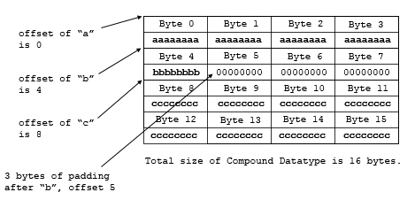

An HDF5 dataset is an array of data elements, arranged according to the specifications of the dataspace. In general, a data element is the smallest addressable unit of storage in the HDF5 file. (Compound datatypes are the exception to this rule.) The HDF5 datatype defines the storage format for a single data element. See the figure below.
The model for HDF5 attributes is extremely similar to datasets: an attribute has a dataspace and a datatype, as shown in the figure below. The information in this chapter applies to both datasets and attributes.
|
|
|
Figure 1. Datatypes, dataspaces, and datasets
|
Abstractly, each data element within the dataset is a sequence of bits, interpreted as a single value from a set of values (e.g., a number or a character). For a given datatype, there is a standard or convention for representing the values as bits, and when the bits are represented in a particular storage the bits are laid out in a specific storage scheme, e.g., as 8-bit bytes, with a specific ordering and alignment of bytes within the storage array.
HDF5 datatypes implement a flexible, extensible, and portable mechanism for specifying and discovering the storage layout of the data elements, determining how to interpret the elements (e.g., as floating point numbers), and for transferring data from different compatible layouts.
An HDF5 datatype describes one specific layout of bits. A dataset has a single datatype which applies to every data element. When a dataset is created, the storage datatype is defined. After the dataset or attribute is created, the datatype cannot be changed.
When data is transferred (e.g., a read or write), each end point of the transfer has a datatype, which describes the correct storage for the elements. The source and destination may have different (but compatible) layouts, in which case the data elements are automatically transformed during the transfer.
HDF5 datatypes describe commonly used binary formats for numbers (integers and floating point) and characters (ASCII). A given computing architecture and programming language supports certain number and character representations. For example, a computer may support 8-, 16-, 32-, and 64-bit signed integers, stored in memory in little-endian byte order. These would presumably correspond to the C programming language types ‘char’, ‘short’, ‘int’, and ‘long’.
When reading and writing from memory, the HDF5 library must know the
appropriate datatype that describes the architecture specific layout.
The HDF5 library provides the platform independent ‘NATIVE’
types, which are mapped to an appropriate datatype for each platform. So
the type ‘H5T_NATIVE_INT’ is an alias for
the appropriate descriptor for each platform.
Data in memory has a datatype:
In addition to numbers and characters, an HDF5 datatype can describe more abstract classes of types, including enumerations, strings, bit strings, and references (pointers to objects in the HDF5 file). HDF5 supports several classes of composite datatypes which are combinations of one or more other datatypes. In addition to the standard predefined datatypes, users can define new datatypes within the datatype classes.
The HDF5 datatype model is very general and flexible:
The HDF5 Library implements an object-oriented model of datatypes.
HDF5 datatypes are organized as a logical set of base types, or datatype
classes. Each datatype class defines a format for representing logical
values as a sequence of bits. For example the H5T_INTEGER
class is a format for representing twos complement integers of various
sizes.
A datatype class is defined as a set of one or more datatype properties. A datatype property is a property of the bit string. The datatype properties are defined by the logical model of the datatype class. For example, the integer class (twos complement integers) has properties such as “signed or unsigned”, “length”, and “byte-order”. The float class (IEEE floating point numbers) has these properties, plus “exponent bits”, “exponent sign”, etc.
A datatype is derived from one datatype class: a given datatype has
a specific value for the datatype properties defined by the class.
For example, for 32-bit signed integers, stored big-endian, the HDF5
datatype is a sub-type of integer with the properties set to
signed=1, size=4 (bytes), and
byte-order=BE.
The HDF5 datatype API (H5T functions) provides methods to create datatypes of different datatype classes, to set the datatype properties of a new datatype, and to discover the datatype properties of an existing datatype.
The datatype for a dataset is stored in the HDF5 file as part of the metadata for the dataset.
A datatype can be shared by more than one dataset in the file if the datatype is saved to the file with a name. This shareable datatype is known as a committed datatype. In the past, this kind of datatype was called a named datatype.
When transferring data (e.g., a read or write), the data elements of the source and destination storage must have compatible types. As a general rule, data elements with the same datatype class are compatible while elements from different datatype classes are not compatible. When transferring data of one datatype to another compatible datatype, the HDF5 Library uses the datatype properties of the source and destination to automatically transform each data element. For example, when reading from data stored as 32-bit signed integers, big-endian into 32-bit signed integers, little-endian, the HDF5 Library will automatically swap the bytes.
Thus, data transfer operations (H5Dread,
H5Dwrite, H5Aread, H5Awrite) require
a datatype for both the source and the destination.
|
|
|
Figure 2. The datatype model
|
The HDF5 Library defines a set of predefined datatypes, corresponding to commonly used storage formats, such as twos complement integers, IEEE Floating point numbers, etc., 4- and 8-byte sizes, big-endian and little-endian byte orders. In addition, a user can derive types with custom values for the properties. For example, a user program may create a datatype to describe a 6-bit integer, or a 600-bit floating point number.
In addition to atomic datatypes, the HDF5 Library supports composite datatypes. A composite datatype is an aggregation of one or more datatypes. Each class of composite datatypes has properties that describe the organization of the composite datatype. See the figure below. Composite datatypes include:
|
|
|
Figure 3. Composite datatypes
|
The figure below shows the HDF5 datatype classes. Each class is defined to have a set of properties which describe the layout of the data element and the interpretation of the bits. The table below lists the properties for the datatype classes.
|
|
|
Figure 4. Datatype classes
|
| Table 1. Datatype classes and their properties | ||||||
| Class | Description | Properties | Notes | |||
| Integer | Twos complement integers | Size (bytes), precision (bits), offset (bits), pad, byte order, signed/unsigned | ||||
| Float | Floating Point numbers | Size (bytes), precision (bits), offset (bits), pad, byte order, sign position, exponent position, exponent size (bits), exponent sign, exponent bias, mantissa position, mantissa (size) bits, mantissa sign, mantissa normalization, internal padding | See IEEE 754 for a definition of these properties. These properties describe non-IEEE 754 floating point formats as well. | |||
| Character | Array of 1-byte character encoding | Size (characters), Character set, byte order, pad/no pad, pad character | Currently, ASCII and UTF-8 are supported. | |||
| Bitfield | String of bits | Size (bytes), precision (bits), offset (bits), pad, byte order | A sequence of bit values packed into one or more bytes. | |||
| Opaque | Uninterpreted data | Size (bytes), precision (bits), offset (bits), pad, byte order, tag | A sequence of bytes, stored and retrieved as a block. The ‘tag’ is a string that can be used to label the value. | |||
| Enumeration | A list of discrete values, with symbolic names in the form of strings. | Number of elements, element names, element values | Enumeration is a list of pairs, (name, value). The name is a string, the value is an unsigned integer. | |||
| Reference | Reference to object or region within the HDF5 file | See the Reference API, H5R | ||||
| Array | Array (1-4 dimensions) of data elements | Number of dimensions, dimension sizes, base datatype | The array is accessed atomically: no selection or sub-setting. | |||
| Variable-length | A variable-length 1-dimensional array of data data elements | Current size, base type | ||||
| Compound | A Datatype of a sequence of Datatypes | Number of members, member names, member types, member offset, member class, member size, byte order | ||||
The HDF5 library predefines a modest number of commonly used datatypes.
These types have standard symbolic names of the form
H5T_arch_base where arch is an architecture
name and base is a programming type name (Table 2). New types can
be derived from the predefined types by copying the predefined type (see
H5Tcopy()) and then modifying the result.
The base name of most types consists of a letter to indicate the class (Table 3), a precision in bits, and an indication of the byte order (Table 4).
Table 5 shows examples of predefined datatypes. The full list can be found in the “HDF5 Predefined Datatypes” section of the HDF5 Reference Manual.
| Table 2. Architectures used in predefined datatypes | |
|
Architecture Name |
Description |
IEEE |
IEEE-754 standard floating point types in various byte orders. |
STD |
This is an architecture that contains semi-standard datatypes like signed two’s complement integers, unsigned integers, and bitfields in various byte orders. |
C |
Types which are specific to the C or Fortran
programming languages are defined in these architectures. For instance,
H5T_C_S1 defines a base string type with null termination
which can be used to derive string types of other lengths. |
NATIVE |
This architecture contains C-like
datatypes for the machine on which the library was compiled. The
types were actually defined by running the H5detect
program when the library was compiled. In order to be portable,
applications should almost always use this architecture to describe
things in memory. |
CRAY |
Cray architectures. These are word-addressable, big-endian systems with non-IEEE floating point. |
INTEL |
All Intel and compatible CPU’s including 80286, 80386, 80486, Pentium, Pentium-Pro, and Pentium-II. These are little-endian systems with IEEE floating-point. |
MIPS |
All MIPS CPU’s commonly used in SGI systems. These are big-endian systems with IEEE floating-point. |
ALPHA |
All DEC Alpha CPU’s, little-endian systems with IEEE floating-point. |
| Table 3. Base types | |
| B | Bitfield |
| F | Floating point |
| I | Signed integer |
| R | References |
| S | Character string |
| U | Unsigned integer |
| Table 4. Byte order | |
| BE | Big-endian |
| LE | Little-endian |
| Table 5. Some predefined datatypes | |
| Example | Description |
H5T_IEEE_F64LE |
Eight-byte, little-endian, IEEE floating-point |
H5T_IEEE_F32BE |
Four-byte, big-endian, IEEE floating point |
H5T_STD_I32LE |
Four-byte, little-endian, signed two’s complement integer |
H5T_STD_U16BE |
Two-byte, big-endian, unsigned integer |
H5T_C_S1 |
One-byte, null-terminated string of eight-bit characters |
H5T_INTEL_B64 |
Eight-byte bit field on an Intel CPU |
H5T_CRAY_F64 |
Eight-byte Cray floating point |
H5T_STD_ROBJ |
Reference to an entire object in a file |
The HDF5 Library predefines a set of NATIVE datatypes which
are similar to C type names. The native types are set to be an alias for the
appropriate HDF5 datatype for each platform. For example,
H5T_NATIVE_INT corresponds to a C int type.
On an Intel based PC, this type is the same as H5T_STD_I32LE,
while on a MIPS system this would be equivalent to H5T_STD_I32BE.
Table 6 shows examples of NATIVE types and corresponding
C types for a common 32-bit workstation.
| Table 6. Native and 32-bit C datatypes | |
| Example | Corresponding C Type |
H5T_NATIVE_CHAR |
char |
H5T_NATIVE_SCHAR |
signed char |
H5T_NATIVE_UCHAR |
unsigned char |
H5T_NATIVE_SHORT |
short |
H5T_NATIVE_USHORT |
unsigned short |
H5T_NATIVE_INT |
int |
H5T_NATIVE_UINT |
unsigned |
H5T_NATIVE_LONG |
long |
H5T_NATIVE_ULONG |
unsigned long |
H5T_NATIVE_LLONG |
long long |
H5T_NATIVE_ULLONG |
unsigned long long |
H5T_NATIVE_FLOAT |
float |
H5T_NATIVE_DOUBLE |
double |
H5T_NATIVE_LDOUBLE |
long double |
H5T_NATIVE_HSIZE |
hsize_t |
H5T_NATIVE_HSSIZE |
hssize_t |
H5T_NATIVE_HERR |
herr_t |
H5T_NATIVE_HBOOL |
hbool_t |
H5T_NATIVE_B8 |
8-bit unsigned integer or 8-bit buffer in memory |
H5T_NATIVE_B16 |
16-bit unsigned integer or 16-bit buffer in memory |
H5T_NATIVE_B32 |
32-bit unsigned integer or 32-bit buffer in memory |
H5T_NATIVE_B64 |
64-bit unsigned integer or 64-bit buffer in memory |
The HDF5 Library manages datatypes as objects. The HDF5 datatype API
manipulates the datatype objects through C function calls. New datatypes
can be created from scratch or copied from existing datatypes. When a
datatype is no longer needed its resources should be released by calling
H5Tclose().
The datatype object is used in several roles in the HDF5 data model and library. Essentially, a datatype is used whenever the format of data elements is needed. There are four major uses of datatypes in the HDF5 Library: at dataset creation, during data transfers, when discovering the contents of a file, and for specifying user-defined datatypes. See the table below.
| Table 7. Datatype uses | |
| Use | Description |
| Dataset creation | The datatype of the data elements must be declared when the dataset is created. |
| Data transfer | The datatype (format) of the data elements must be defined for both the source and destination. |
| Discovery | The datatype of a dataset can be interrogated to retrieve a complete description of the storage layout. |
| Creating user-defined datatypes | Users can define their own datatypes by creating datatype objects and setting their properties. |
All the data elements of a dataset have the same datatype. When a dataset is created, the datatype for the data elements must be specified. The datatype of a dataset can never be changed. The example below shows the use of a datatype to create a dataset called “/dset”. In this example, the dataset will be stored as 32-bit signed integers in big-endian order.
hid_t dt;
dt = H5Tcopy(H5T_STD_I32BE);
dataset_id = H5Dcreate(file_id, “/dset”, dt, dataspace_id,
H5P_DEFAULT, H5P_DEFAULT, H5P_DEFAULT); |
|
Example 1. Using a datatype to create a dataset
|
Probably the most common use of datatypes is to write or read data from a dataset or attribute. In these operations, each data element is transferred from the source to the destination (possibly rearranging the order of the elements). Since the source and destination do not need to be identical (i.e., one is disk and the other is memory) the transfer requires both the format of the source element and the destination element. Therefore, data transfers use two datatype objects, for the source and destination.
When data is written, the source is memory and the destination is disk (file). The memory datatype describes the format of the data element in the machine memory, and the file datatype describes the desired format of the data element on disk. Similarly, when reading, the source datatype describes the format of the data element on disk, and the destination datatype describes the format in memory.
In the most common cases, the file datatype is the datatype specified when the dataset was created, and the memory datatype should be the appropriate NATIVE type.
The examples below show samples of writing data to and reading data
from a dataset. The data in memory is declared C type ‘int’,
and the datatype H5T_NATIVE_INT corresponds to this type.
The datatype of the dataset should be of datatype class
H5T_INTEGER.
int dset_data[DATA_SIZE];
status = H5Dwrite(dataset_id, H5T_NATIVE_INT, H5S_ALL, H5S_ALL,
H5P_DEFAULT, dset_data); |
|
Example 2. Writing to a dataset
|
int dset_data[DATA_SIZE];
status = H5Dread(dataset_id, H5T_NATIVE_INT, H5S_ALL, H5S_ALL,
H5P_DEFAULT, dset_data); |
|
Example 3. Reading from a dataset
|
The HDF5 Library enables a program to determine the datatype class and properties for any datatype. In order to discover the storage format of data in a dataset, the datatype is obtained, and the properties are determined by queries to the datatype object. The example below shows code that analyzes the datatype for an integer and prints out a description of its storage properties (byte order, signed, size.)
switch (H5Tget_class(type)) {
case H5T_INTEGER:
ord = H5Tget_order(type);
sgn = H5Tget_sign(type);
printf(“Integer ByteOrder= ”);
switch (ord) {
case H5T_ORDER_LE:
printf(“LE”);
break;
case H5T_ORDER_BE:
printf(“BE”);
break;
}
printf(“ Sign= ”);
switch (sgn) {
case H5T_SGN_NONE:
printf(“false”);
break;
case H5T_SGN_2:
printf(“true”);
break;
}
printf(“ Size= ”);
sz = H5Tget_size(type);
printf(“%d”, sz);
printf(“\n”);
break; |
|
Example 4. Discovering datatype properties
|
Most programs will primarily use the predefined datatypes described above, possibly in composite datatypes such as compound or array datatypes. However, the HDF5 datatype model is extremely general; a user program can define a great variety of atomic datatypes (storage layouts). In particular, the datatype properties can define signed and unsigned integers of any size and byte order, and floating point numbers with different formats, size, and byte order. The HDF5 datatype API provides methods to set these properties.
User-defined types can be used to define the layout of data in memory, e.g., to match some platform specific number format or application defined bit-field. The user-defined type can also describe data in the file, e.g., some application-defined format. The user-defined types can be translated to and from standard types of the same class, as described above.
Functions that can be used with datatypes (H5T functions) and property list functions that can be used with datatypes (H5P functions) are listed below.
| Function Listing 1. General datatype operations | ||
| C Function Fortran Function |
Purpose | |
H5Tcreate
| Creates a new datatype. | |
H5Topen
| Opens a committed datatype. The C function is a macro: see “API Compatibility Macros in HDF5.” | |
H5Tcommit
| Commits a transient datatype to a file. The datatype is now a committed datatype. The C function is a macro: see “API Compatibility Macros in HDF5.” | |
H5Tcommit_anon
| Commits a transient datatype to a file. The datatype is now a committed datatype, but it is not linked into the file structure. | |
H5Tcommitted
| Determines whether a datatype is a committed or a transient type. | |
H5Tcopy
| Copies an existing datatype. | |
H5Tequal
| Determines whether two datatype identifiers refer to the same datatype. | |
H5Tlock
| Locks a datatype. | |
H5Tget_class
| Returns the datatype class identifier. | |
H5Tget_create_plist
| Returns a copy of a datatype creation property list. | |
H5Tget_size
| Returns the size of a datatype. | |
H5Tget_super
| Returns the base datatype from which a datatype is derived. | |
H5Tget_native_type
| Returns the native datatype of a specified datatype. | |
H5Tdetect_class
| Determines whether a datatype is of the given datatype class. | |
H5Tget_order
| Returns the byte order of a datatype. | |
H5Tset_order
| Sets the byte ordering of a datatype. | |
H5Tdecode
| Decode a binary object description of datatype and return a new object identifier. | |
H5Tencode
| Encode a datatype object description into a binary buffer. | |
H5Tclose
| Releases a datatype. | |
| Function Listing 2. Conversion functions | ||
|
C Function Fortran Function | Purpose | |
H5Tconvert
| Converts data between specified datatypes. | |
H5Tcompiler_conv
| Check whether the library’s default conversion is hard conversion. | |
H5Tfind
| Finds a conversion function. | |
H5Tregister
| Registers a conversion function. | |
H5Tunregister
| Removes a conversion function from all conversion paths. | |
| Function Listing 3. Atomic datatype properties | ||
|
C Function Fortran Function | Purpose | |
H5Tset_size
| Sets the total size for an atomic datatype. | |
H5Tget_precision
| Returns the precision of an atomic datatype. | |
H5Tset_precision
| Sets the precision of an atomic datatype. | |
H5Tget_offset
| Retrieves the bit offset of the first significant bit. | |
H5Tset_offset
| Sets the bit offset of the first significant bit. | |
H5Tget_pad
| Retrieves the padding type of the least and most-significant bit padding. | |
H5Tset_pad
| Sets the least and most-significant bits padding types. | |
H5Tget_sign
| Retrieves the sign type for an integer type. | |
H5Tset_sign
| Sets the sign property for an integer type. | |
H5Tget_fields
| Retrieves floating point datatype bit field information. | |
H5Tset_fields
| Sets locations and sizes of floating point bit fields. | |
H5Tget_ebias
| Retrieves the exponent bias of a floating-point type. | |
H5Tset_ebias
| Sets the exponent bias of a floating-point type. | |
H5Tget_norm
| Retrieves mantissa normalization of a floating-point datatype. | |
H5Tset_norm
| Sets the mantissa normalization of a floating-point datatype. | |
H5Tget_inpad
| Retrieves the internal padding type for unused bits in floating-point datatypes. | |
H5Tset_inpad
| Fills unused internal floating point bits. | |
H5Tget_cset
| Retrieves the character set type of a string datatype. | |
H5Tset_cset
| Sets character set to be used. | |
H5Tget_strpad
| Retrieves the storage mechanism for a string datatype. | |
H5Tset_strpad
| Defines the storage mechanism for character strings. | |
| Function Listing 4. Enumeration datatypes | ||
|
C Function Fortran Function | Purpose | |
H5Tenum_create
| Creates a new enumeration datatype. | |
H5Tenum_insert
| Inserts a new enumeration datatype member. | |
H5Tenum_nameof
| Returns the symbol name corresponding to a specified member of an enumeration datatype. | |
H5Tenum_valueof
| Returns the value corresponding to a specified member of an enumeration datatype. | |
H5Tget_member_value
| Returns the value of an enumeration datatype member. | |
H5Tget_nmembers
| Retrieves the number of elements in a compound or enumeration datatype. | |
H5Tget_member_name
| Retrieves the name of a compound or enumeration datatype member. | |
H5Tget_member_index
| Retrieves the index of a compound or enumeration datatype member. | |
| Function Listing 5. Compound datatype properties | ||
|
C Function Fortran Function | Purpose | |
H5Tget_nmembers
| Retrieves the number of elements in a compound or enumeration datatype. | |
H5Tget_member_class
| Returns datatype class of compound datatype member. | |
H5Tget_member_name
| Retrieves the name of a compound or enumeration datatype member. | |
H5Tget_member_index
| Retrieves the index of a compound or enumeration datatype member. | |
H5Tget_member_offset
| Retrieves the offset of a field of a compound datatype. | |
H5Tget_member_type
| Returns the datatype of the specified member. | |
H5Tinsert
| Adds a new member to a compound datatype. | |
H5Tpack
| Recursively removes padding from within a compound datatype. | |
| Function Listing 6. Array datatypes | ||
|
C Function Fortran Function | Purpose | |
H5Tarray_create
| Creates an array datatype object. The C function is a macro: see “API Compatibility Macros in HDF5.” | |
H5Tget_array_ndims
| Returns the rank of an array datatype. | |
H5Tget_array_dims
| Returns sizes of array dimensions and dimension permutations. The C function is a macro: see “API Compatibility Macros in HDF5.” | |
| Function Listing 7. Variable-length datatypes | ||
|
C Function Fortran Function | Purpose | |
H5Tvlen_create
| Creates a new variable-length datatype. | |
H5Tis_variable_str
| Determines whether datatype is a variable-length string. | |
| Function Listing 8. Opaque datatypes | ||
|
C Function Fortran Function | Purpose | |
H5Tset_tag
| Tags an opaque datatype. | |
H5Tget_tag
| Gets the tag associated with an opaque datatype. | |
| Function Listing 9. Conversions between datatype and text | ||
|
C Function Fortran Function | Purpose | |
H5LTtext_to_dtype
| Creates a datatype from a text description. | |
H5LTdtype_to_text
| Generates a text description of a datatype. | |
| Function Listing 10. Datatype creation property list functions (H5P) | ||
|
C Function Fortran Function | Purpose | |
H5Pset_char_encoding
| Sets the character encoding used to encode a string. Use to set ASCII or UTF-8 character encoding for object names. | |
H5Pget_char_encoding
| Retrieves the character encoding used to create a string. | |
| Function Listing 11. Datatype access property list functions (H5P) | ||
|
C Function Fortran Function | Purpose | |
H5Pset_type_conv_cb
| Sets user-defined datatype conversion callback function. | |
H5Pget_type_conv_cb
| Gets user-defined datatype conversion callback function. | |
The HDF5 Library implements an object-oriented model of datatypes. HDF5 datatypes are organized as a logical set of base types, or datatype classes. The HDF5 Library manages datatypes as objects. The HDF5 datatype API manipulates the datatype objects through C function calls. The figure below shows the abstract view of the datatype object. The table below shows the methods (C functions) that operate on datatype objects. New datatypes can be created from scratch or copied from existing datatypes.
| |||
|
Figure 5. The datatype object
|
| Table 8. General operations on datatype objects | |
| API Function | Description |
hid_t H5Tcreate (H5T_class_t
class, size_t size) |
Create a new datatype object of
datatype class class. The following datatype classes are
supported with this function:
H5Tcopy(). |
hid_t H5Tcopy (hid_t type)
|
Obtain a modifiable transient datatype which is a copy of type. If type is a dataset identifier then the type returned is a modifiable transient copy of the datatype of the specified dataset. |
hid_t H5Topen (hid_t location, |
Open a committed datatype. The committed datatype returned by this function is read-only. |
htri_t H5Tequal (hid_t type1, |
Determines if two types are equal. |
herr_t H5Tclose (hid_t type)
|
Releases resources associated with a
datatype obtained from H5Tcopy, H5Topen, or
H5Tcreate. It is illegal to close an
immutable transient datatype (e.g., predefined types). |
herr_t H5Tcommit (hid_t
location, const char *name, hid_t type,
H5P_DEFAULT, H5P_DEFAULT, |
Commit a transient datatype (not immutable) to a file to become a committed datatype. Committed datatypes can be shared. |
htri_t H5Tcommitted (hid_t
type) |
Test whether the datatype is transient or committed (named). |
herr_t H5Tlock (hid_t
type) |
Make a transient datatype immutable (read-only and not closable). Predefined types are locked. |
In order to use a datatype, the object must be created
(H5Tcreate), or a reference obtained by cloning from an
existing type (H5Tcopy), or opened (H5Topen).
In addition, a reference to the datatype of a dataset or attribute
can be obtained with H5Dget_type or
H5Aget_type. For composite datatypes a reference
to the datatype for members or base types can be obtained
(H5Tget_member_type, H5Tget_super).
When the datatype object is no longer needed, the reference is
discarded with H5Tclose.
Two datatype objects can be tested to see if they are the same with
H5Tequal. This function returns true if the two datatype
references refer to the same datatype object. However, if two datatype
objects define equivalent datatypes (the same datatype class and
datatype properties), they will not be considered ‘equal’.
A datatype can be written to the file as a first class object
(H5Tcommit). This is a committed datatype and can be used
in the same way as any other datatype.
Any HDF5 datatype object can be queried to discover all of its datatype properties. For each datatype class, there are a set of API functions to retrieve the datatype properties for this class.
Table 9 lists the functions to discover the properties of atomic datatypes. Table 10 lists the queries relevant to specific numeric types. Table 11 gives the properties for atomic string datatype, and Table 12 gives the property of the opaque datatype.
| Table 9. Functions to discover properties of atomic datatypes | |
| Functions | Description |
H5T_class_t H5Tget_class (hid_t
type) |
The datatype class: H5T_INTEGER,
H5T_FLOAT, H5T_STRING, or H5T_BITFIELD, H5T_OPAQUE,
H5T_COMPOUND, H5T_REFERENCE, H5T_ENUM, H5T_VLEN, H5T_ARRAY |
size_t H5Tget_size
(hid_t type) |
The total size of the element in bytes, including padding which may appear on either side of the actual value. |
H5T_order_t H5Tget_order
(hid_t type) |
The byte order describes how the bytes of the datatype are
laid out in memory. If the lowest memory address contains the
least significant byte of the datum then it is
said to be little-endian or H5T_ORDER_LE. If
the bytes are in the opposite order then they are said to be
big-endian or H5T_ORDER_BE. |
size_t H5Tget_precision
(hid_t type) |
The precision property identifies the number
of significant bits of a datatype and the
offset property (defined below) identifies its location.
Some datatypes occupy more bytes than what is needed to store the
value. For instance, a short on a Cray is 32 significant
bits in an eight-byte field. |
int H5Tget_offset (hid_t type) |
The offset property defines the bit location
of the least significant bit of a bit
field whose length is precision. |
herr_t H5Tget_pad
(hid_t type, H5T_pad_t *lsb, H5T_pad_t
*msb) |
Padding is the bits of a data element
which are not significant as defined by the precision
and offset properties. Padding in the low-numbered
bits is lsb padding and padding in the high-numbered
bits is msb padding. Padding bits can be set to zero
(H5T_PAD_ZERO) or one (H5T_PAD_ONE). |
| Table 10. Functions to discover properties of atomic numeric datatypes | |
| Functions | Description |
H5T_sign_t H5Tget_sign
(hid_t type) |
(INTEGER) Integer data can be signed two’s
complement (H5T_SGN_2)
or unsigned (H5T_SGN_NONE). |
herr_t H5Tget_fields
(hid_t type, size_t *spos, size_t *epos,
size_t *esize, size_t *mpos,
size_t *msize) |
(FLOAT) A floating-point data element has bit fields which are the exponent and mantissa as well as a mantissa sign bit. These properties define the location (bit position of least significant bit of the field) and size (in bits) of each field. The sign bit is always of length one and none of the fields are allowed to overlap. |
size_t H5Tget_ebias
(hid_t type) |
(FLOAT) The exponent is stored as a non-negative
value which is ebias larger than the true exponent. |
H5T_norm_t H5Tget_norm
(hid_t type) |
(FLOAT) This property describes the normalization
method of the mantissa.
|
H5T_pad_t H5Tget_inpad
(hid_t type) |
(FLOAT) If any internal bits (that is, bits between
the sign bit, the mantissa field, and the exponent field but
within the precision field) are unused, then they will be
filled according to the value of this property. The padding can
be: H5T_PAD_NONE, H5T_PAD_ZERO
or H5T_PAD_ONE. |
| Table 11. Functions to discover properties of atomic string datatypes | |
| Functions | Description |
H5T_cset_t H5Tget_cset
(hid_t type) |
Two character sets are currently
supported: ASCII (H5T_CSET_ASCII) and UTF-8
(H5T_CSET_UTF8). |
H5T_str_t H5Tget_strpad
(hid_t type) |
The string datatype has a fixed
length, but the string may be shorter than the length. This
property defines the storage mechanism for the left over bytes.
The options are: H5T_STR_NULLTERM,
H5T_STR_NULLPAD, or H5T_STR_SPACEPAD. |
| Table 12. Functions to discover properties of atomic opaque datatypes | |
| Functions | Description |
char *H5Tget_tag(hid_t type_id) |
A user-defined string. |
The composite datatype classes can also be analyzed to discover their datatype properties and the datatypes that are members or base types of the composite datatype. The member or base type can, in turn, be analyzed. The table below lists the functions that can access the datatype properties of the different composite datatypes.
| Table 13. Functions to discover properties of composite datatypes | |
| Functions | Description |
int H5Tget_nmembers(hid_t type_id) |
(COMPOUND)The number of fields in the compound datatype. |
H5T_class_t H5Tget_member_class |
(COMPOUND) The datatype class of compound datatype
member member_no. |
char * H5Tget_member_name
(hid_t type_id, unsigned field_idx) |
(COMPOUND) The name of field field_idx
of a compound datatype. |
size_t H5Tget_member_offset
(hid_t type_id, unsigned memb_no) |
(COMPOUND) The byte offset of the beginning of a field within a compound datatype. |
hid_t H5Tget_member_type
(hid_t type_id, unsigned field_idx) |
(COMPOUND) The datatype of the specified member. |
int H5Tget_array_ndims
(hid_t adtype_id) |
(ARRAY) The number of dimensions (rank) of the array datatype object. |
int H5Tget_array_dims
(hid_t adtype_id, hsize_t *dims[]) |
(ARRAY) The sizes of the dimensions and the dimension permutations of the array datatype object. |
hid_t H5Tget_super(hid_t type)
|
(ARRAY, VL, ENUM)The base datatype from which the datatype type is derived. |
herr_t H5Tenum_nameof(hid_t type |
(ENUM) The symbol name that corresponds to the specified value of the enumeration datatype |
herr_t H5Tenum_valueof(hid_t type |
(ENUM) The value that corresponds to the specified name of the enumeration datatype |
herr_t H5Tget_member_value |
(ENUM) The value of the
enumeration datatype member memb_no |
The HDF5 Library enables user programs to create and modify datatypes. The essential steps are:
To create a user-defined atomic datatype, the procedure is to clone
a predefined datatype of the appropriate datatype class
(H5Tcopy), and then set the datatype properties appropriate
to the datatype class. The table below shows how to create a datatype
to describe a 1024-bit unsigned integer.
hid_t new_type = H5Tcopy (H5T_NATIVE_INT); H5Tset_precision(new_type, 1024); H5Tset_sign(new_type, H5T_SGN_NONE); |
|
Example 5. Create a new datatype
|
Composite datatypes are created with a specific API call for each datatype class. The table below shows the creation method for each datatype class. A newly created datatype cannot be used until the datatype properties are set. For example, a newly created compound datatype has no members and cannot be used.
| Table 14. Functions to create each datatype class | |
| Datatype Class | Function to Create |
| COMPOUND | H5Tcreate |
| OPAQUE | H5Tcreate |
| ENUM | H5Tenum_create |
| ARRAY | H5Tarray_create |
| VL | H5Tvlen_create |
Once the datatype is created and the datatype properties set, the datatype object can be used.
Predefined datatypes are defined by the library during initialization
using the same mechanisms as described here. Each predefined datatype is
locked (H5Tlock), so that it cannot be changed or destroyed.
User-defined datatypes may also be locked using H5Tlock.
Table 15 summarizes the API methods that set properties of atomic types. Table 16 shows properties specific to numeric types, Table 17 shows properties specific to the string datatype class. Note that offset, pad, etc. do not apply to strings. Table 18 shows the specific property of the OPAQUE datatype class.
| Table 15. API methods that set properties of atomic datatypes | |
| Functions | Description |
herr_t H5Tset_size (hid_t type,
|
Set the total size of the element
in bytes. This includes padding which may appear on either side of the
actual value. If this property is reset to a smaller value which
would cause the significant part of the data to extend beyond the
edge of the datatype, then the offset property is decremented a
bit at a time. If the offset reaches zero and the significant
part of the data still extends beyond the edge of the datatype
then the precision property is decremented a bit at a time.
Decreasing the size of a datatype may fail if the
H5T_FLOAT bit fields would extend beyond the significant
part of the type. |
herr_t H5Tset_order
(hid_t type, H5T_order_t order) |
Set the byte order to little-endian
(H5T_ORDER_LE) or big-endian (H5T_ORDER_BE). |
herr_t H5Tset_precision
(hid_t type, size_t precision) |
Set the number of significant bits
of a datatype. The offset property (defined below)
identifies its location. The size property defined above represents
the entire size (in bytes) of the datatype. If the precision is
decreased then padding bits are inserted on the MSB side of the
significant bits (this will fail for H5T_FLOAT types
if it results in the sign, mantissa, or exponent bit field extending
beyond the edge of the significant bit field). On the other hand,
if the precision is increased so that it “hangs over”
the edge of the total size then the offset property is decremented
a bit at a time. If the offset reaches zero and the significant
bits still hang over the edge, then the total size is increased
a byte at a time. |
herr_t H5Tset_offset
(hid_t type, size_t offset) |
Set the bit location of the least
significant bit of a bit field whose length is precision.
The bits of the entire data are numbered beginning at zero at the
least significant bit of the least significant byte (the byte at
the lowest memory address for a little-endian type or the byte
at the highest address for a big-endian type). The offset property
defines the bit location of the least significant bit of a bit field
whose length is precision. If the offset is increased so the
significant bits “hang over” the edge of the datum, then
the size property is automatically incremented. |
herr_t H5Tset_pad (hid_t
type, H5T_pad_t lsb, H5T_pad_t msb) |
Set the padding to zeros
(H5T_PAD_ZERO) or ones (H5T_PAD_ONE). Padding
is the bits of a data element which are not significant as defined
by the precision and offset properties.
Padding in the low-numbered bits is lsb
padding and padding in the high-numbered bits is
msb padding. |
| Table 16. API methods that set properties of numeric datatypes | |
| Functions | Description |
herr_t H5Tset_sign
(hid_t type, H5T_sign_t sign) |
(INTEGER) Integer
data can be signed two’s complement (H5T_SGN_2)
or unsigned (H5T_SGN_NONE). |
herr_t H5Tset_fields
(hid_t type, size_t spos, size_t epos,
size_t esize, size_t mpos, size_t msize)
|
(FLOAT) Set the properties define the location (bit position of least significant bit of the field) and size (in bits) of each field. The sign bit is always of length one and none of the fields are allowed to overlap. |
herr_t H5Tset_ebias (hid_t type,
size_t ebias) |
(FLOAT) The exponent
is stored as a non-negative value which is ebias larger
than the true exponent. |
herr_t H5Tset_norm
(hid_t type, H5T_norm_t norm) |
(FLOAT) This
property describes the normalization method of the mantissa.
|
herr_t H5Tset_inpad
(hid_t type, H5T_pad_t inpad) |
(FLOAT) If any
internal bits (that is, bits between the sign bit, the mantissa field,
and the exponent field but within the precision field) are unused,
then they will be filled according to the value of this property.
The padding can be: H5T_PAD_NONE, H5T_PAD_ZERO
or H5T_PAD_ONE. |
| Table 17. API methods that set properties of string datatypes | |
| Functions | Description |
herr_t H5Tset_size (hid_t type,
|
Set the length of the string, in bytes.
The precision is automatically set to 8*size. |
herr_t H5Tset_precision
(hid_t type, size_t precision) |
The precision must be a multiple of 8. |
herr_t H5Tset_cset
(hid_t type_id, H5T_cset_t cset ) |
Two character sets are currently
supported: ASCII (H5T_CSET_ASCII) and UTF-8
(H5T_CSET_UTF8). |
herr_t H5Tset_strpad
(hid_t type_id, H5T_str_t strpad ) |
The string datatype has a fixed
length, but the string may be shorter than the length. This property
defines the storage mechanism for the left over bytes. The method
used to store character strings differs with the programming language:
Valid string padding values, as passed in the parameter strpad, are as follows:
|
| Table 18. API methods that set properties of opaque datatypes | |
| Functions | Description |
herr_t H5Tset_tag (hid_t type_id
|
Tags the opaque datatype type_id with an ASCII identifier tag. |
The example below shows how to create a 128-bit little-endian signed
integer type. Increasing the precision of a type automatically increases
the total size. Note that the proper procedure is to begin from a type
of the intended datatype class which in this case is a
NATIVE INT.
hid_t new_type = H5Tcopy (H5T_NATIVE_INT); H5Tset_precision (new_type, 128); H5Tset_order (new_type, H5T_ORDER_LE); |
|
Example 6. Create a new 128-bit little-endian signed integer
datatype
|
The figure below shows the storage layout as the type is defined. The
H5Tcopy creates a datatype that is the same as
H5T_NATIVE_INT. In this example, suppose this is a 32-bit
big-endian number (Figure a). The precision is set to 128 bits,
which automatically extends the size to 8 bytes (Figure b). Finally,
the byte order is set to little-endian (Figure c).
| |||||||||||||||||||||||||||||||||||||||||||||||||
|
Figure 6. The storage layout for a new 128-bit little-endian
signed integer datatype
|
The significant bits of a data element can be offset from the beginning of
the memory for that element by an amount of padding. The offset
property specifies the number of bits of padding that appear to the
“right of” the value. The table and figure below show how
a 32-bit unsigned integer with 16-bits of precision having the value
0x1122 will be laid out in memory.
| Table 19. Memory Layout for a 32-bit unsigned integer | ||||
| Byte Position | Big-Endian Offset=0 |
Big-Endian Offset=16 |
Little-Endian Offset=0 |
Little-Endian Offset=16 |
| 0: | [pad] | [0x11] | [0x22] | [pad] |
| 1: | [pad] | [0x22] | [0x11] | [pad] |
| 2: | [0x11] | [pad] | [pad] | [0x22] |
| 3: | [0x22] | [pad] | [pad] | [0x11] |
| ||||||||||||||||||||||||||||||||||||||||||||||||||||||||
|
Figure 7. Memory Layout for a 32-bit unsigned integer
|
If the offset is incremented then the total size is incremented also if necessary to prevent significant bits of the value from hanging over the edge of the datatype.
The bits of the entire data are numbered beginning at zero at the
least significant bit of the least significant byte (the byte at the
lowest memory address for a little-endian type or the byte at the
highest address for a big-endian type). The offset
property defines the bit location of the least signficant bit of a
bit field whose length is precision. If the offset is
increased so the significant bits “hang over” the edge
of the datum, then the size property is automatically
incremented.
To illustrate the properties of the integer datatype class, the example below shows how to create a user-defined datatype that describes a 24-bit signed integer that starts on the third bit of a 32-bit word. The datatype is specialized from a 32-bit integer, the precision is set to 24 bits, and the offset is set to 3.
hid_t dt; dt = H5Tcopy(H5T_SDT_I32LE); H5Tset_precision(dt, 24); H5Tset_offset(dt,3); H5Tset_pad(dt, H5T_PAD_ZERO, H5T_PAD_ONE); |
|
Example 7. A user-defined datatype with a 24-bit signed integer
|
The figure below shows the storage layout for a data element. Note that
the unused bits in the offset will be set to zero and the unused bits at
the end will be
set to one, as specified in the H5Tset_pad call.
| ||||||||||||||||
|
Figure 8. A user-defined integer datatype a range of -1,048,583
to 1,048,584
|
||||||||||||||||
To illustrate a user-defined floating point number, the example below shows how to create a 24-bit floating point number that starts 5 bits into a 4 byte word. The floating point number is defined to have a mantissa of 19 bits (bits 5-23), an exponent of 3 bits (25-27), and the sign bit is bit 28. (Note that this is an illustration of what can be done and is not necessarily a floating point format that a user would require.)
hid_t dt; dt = H5Tcopy(H5T_IEEE_F32LE); H5Tset_precision(dt, 24); H5Tset_fields (dt, 28, 25, 3, 5, 19); H5Tset_pad(dt, H5T_PAD_ZERO, H5T_PAD_ONE); H5Tset_inpad(dt, H5T_PAD_ZERO); |
|
Example 8. A user-defined 24-bit floating point datatype
|
|
||||||||||||||||
|
Figure 9. A user-defined floating point datatype
|
||||||||||||||||
The figure above shows the storage layout of a data element for this datatype. Note that there is an unused bit (24) between the mantissa and the exponent. This bit is filled with the inpad value which in this case is 0.
The sign bit is always of length one and none of the fields are allowed to overlap. When expanding a floating-point type one should set the precision first; when decreasing the size one should set the field positions and sizes first.
All composite datatypes must be user-defined; there are no predefined composite datatypes.
The subsections below describe how to create a compound datatype and how to write and read data of a compound datatype.
Compound datatypes are conceptually similar to a C struct or Fortran derived types. The compound datatype defines a contiguous sequence of bytes, which are formatted using one up to 2^16 datatypes (members). A compound datatype may have any number of members, in any order, and the members may have any datatype, including compound. Thus, complex nested compound datatypes can be created. The total size of the compound datatype is greater than or equal to the sum of the size of its members, up to a maximum of 2^32 bytes. HDF5 does not support datatypes with distinguished records or the equivalent of C unions or Fortran EQUIVALENCE statements.
Usually a C struct or Fortran derived type will be defined to hold
a data point in memory, and the offsets of the members in memory will
be the offsets of the struct members from the beginning of an instance
of the struct. The HDF5 C library provides a macro
HOFFSET (s,m) to calculate the member’s offset. The HDF5
Fortran applications have to calculate offsets by using sizes of members
datatypes and by taking in consideration the order of members in the
Fortran derived type.
HOFFSET(s,m)
offsetof(s,m)
stddef.h does exactly the same
thing as the HOFFSET() macro.Note for Fortran users: Offsets of Fortran structure members correspond to the offsets within a packed datatype (see explanation below) stored in an HDF5 file.
Each member of a compound datatype must have a descriptive name which is the key used to uniquely identify the member within the compound datatype. A member name in an HDF5 datatype does not necessarily have to be the same as the name of the member in the C struct or Fortran derived type, although this is often the case. Nor does one need to define all members of the C struct or Fortran derived type in the HDF5 compound datatype (or vice versa).
Unlike atomic datatypes which are derived from other atomic datatypes, compound datatypes are created from scratch. First, one creates an empty compound datatype and specifies its total size. Then members are added to the compound datatype in any order. Each member type is inserted at a designated offset. Each member has a name which is the key used to uniquely identify the member within the compound datatype.
The example below shows a way of creating an HDF5 C compound datatype to
describe a complex number. This is a structure with two components,
“real” and “imaginary”, and each component
is a double. An equivalent C struct whose type is defined by the
complex_t struct is shown.
typedef struct {
double re; /*real part*/
double im; /*imaginary part*/
} complex_t;
hid_t complex_id = H5Tcreate (H5T_COMPOUND, sizeof (complex_t));
H5Tinsert (complex_id, “real”, HOFFSET(complex_t,re),
H5T_NATIVE_DOUBLE);
H5Tinsert (complex_id, “imaginary”, HOFFSET(complex_t,im),
H5T_NATIVE_DOUBLE); |
|
Example 9. A compound datatype for complex numbers in C
|
The example below shows a way of creating an HDF5 Fortran compound
datatype to describe a complex number. This is a Fortran derived type
with two components, “real” and “imaginary”,
and each component is DOUBLE PRECISION. An equivalent Fortran TYPE
whose type is defined by the TYPE complex_t is shown.
TYPE complex_t
DOUBLE PRECISION re ! real part
DOUBLE PRECISION im; ! imaginary part
END TYPE complex_t
CALL h5tget_size_f(H5T_NATIVE_DOUBLE, re_size, error)
CALL h5tget_size_f(H5T_NATIVE_DOUBLE, im_size, error)
complex_t_size = re_size + im_size
CALL h5tcreate_f(H5T_COMPOUND_F, complex_t_size, type_id)
offset = 0
CALL h5tinsert_f(type_id, “real”, offset, H5T_NATIVE_DOUBLE, error)
offset = offset + re_size
CALL h5tinsert_f(type_id, “imaginary”, offset, H5T_NATIVE_DOUBLE, error) |
|
Example 10. A compound datatype for complex numbers in Fortran
|
Important Note: The compound datatype is created with a size
sufficient to hold all its members. In the C example above, the size of
the C struct and the HOFFSET macro are used as a convenient
mechanism to determine the appropriate size and offset. Alternatively, the
size and offset could be manually determined: the size can be set to
16 with “real” at offset 0 and “imaginary” at
offset 8. However, different platforms and compilers have different
sizes for “double” and may have alignment restrictions
which require additional padding within the structure. It is much
more portable to use the HOFFSET macro which assures
that the values will be correct for any platform.
The figure below shows how the compound datatype would be laid out
assuming that NATIVE_DOUBLE are 64-bit numbers and that
there are no alignment requirements. The total size of the compound
datatype will be 16 bytes, the “real” component will
start at byte 0, and “imaginary” will start at byte 8.
|
|||||||||||||||||||||||||||||||||||||||
|
Figure 10. Layout of a compound datatype
|
|||||||||||||||||||||||||||||||||||||||
The members of a compound datatype may be any HDF5 datatype including the compound, array, and variable-length (VL) types. The figure and example below show the memory layout and code which creates a compound datatype composed of two complex values, and each complex value is also a compound datatype as in the figure above.
|
||||||||||||||||||||||||||||||||||||||||||||||||||||||||||||||||||||||
|
Figure 11. Layout of a compound datatype nested within a compound
datatype
|
typedef struct {
complex_t x;
complex_t y;
} surf_t;
hid_t complex_id, surf_id; /*hdf5 datatypes*/
complex_id = H5Tcreate (H5T_COMPOUND, sizeof(complex_t));
H5Tinsert (complex_id, “re”, HOFFSET(complex_t,re),
H5T_NATIVE_DOUBLE);
H5Tinsert (complex_id, “im”, HOFFSET(complex_t,im),
H5T_NATIVE_DOUBLE);
surf_id = H5Tcreate (H5T_COMPOUND, sizeof(surf_t));
H5Tinsert (surf_id, “x”, HOFFSET(surf_t,x), complex_id);
H5Tinsert (surf_id, “y”, HOFFSET(surf_t,y), complex_id); |
|
Example 11. Code for a compound datatype nested within a compound
datatype
|
Note that a similar result could be accomplished by creating a compound datatype and inserting four fields. See the figure below. This results in the same layout as the figure above. The difference would be how the fields are addressed. In the first case, the real part of ‘y’ is called ‘y.re’; in the second case it is ‘y-re’.
typedef struct {
complex_t x;
complex_t y;
} surf_t;
hid_t surf_id = H5Tcreate (H5T_COMPOUND, sizeof(surf_t));
H5Tinsert (surf_id, “x-re”, HOFFSET(surf_t,x.re),
H5T_NATIVE_DOUBLE);
H5Tinsert (surf_id, “x-im”, HOFFSET(surf_t,x.im),
H5T_NATIVE_DOUBLE);
H5Tinsert (surf_id, “y-re”, HOFFSET(surf_t,y.re),
H5T_NATIVE_DOUBLE);
H5Tinsert (surf_id, “y-im”, HOFFSET(surf_t,y.im),
H5T_NATIVE_DOUBLE); |
|
Example 12. Another compound datatype nested within a
compound datatype
|
The members of a compound datatype do not always
fill all the bytes. The HOFFSET macro
assures that the members will be laid out according
to the requirements of the platform and language.
The example below shows an example of a C struct which requires
extra bytes of padding on many platforms. The second
element, ‘b’, is a 1-byte character followed by an 8
byte double, ‘c’. On many systems, the 8-byte value must
be stored on a 4- or 8-byte boundary. This requires the struct
to be larger than the sum of the size of its elements.
In the example below, sizeof and
HOFFSET are used to assure that the
members are inserted at the correct offset to match the
memory conventions of the platform. The figure below shows how
this data element would be stored in memory, assuming the
double must start on a 4-byte boundary. Notice the extra
bytes between ‘b’ and ‘c’.
typedef struct s1_t {
int a;
char b;
double c;
} s1_t;
s1_tid = H5Tcreate (H5T_COMPOUND, sizeof(s1_t));
H5Tinsert(s1_tid, “a_name”, HOFFSET(s1_t, a), H5T_NATIVE_INT);
H5Tinsert(s1_tid, “b_name”, HOFFSET(s1_t, b), H5T_NATIVE_CHAR);
H5Tinsert(s1_tid, “c_name”, HOFFSET(s1_t, c), H5T_NATIVE_DOUBLE); |
|
Example 13. A compound datatype that requires padding
|
|
 |
|
Figure 12. Memory layout of a compound datatype that requires
padding
|
However, data stored on disk does not require
alignment, so unaligned versions of compound data
structures can be created to improve space efficiency
on disk. These unaligned compound datatypes can be
created by computing offsets by hand to eliminate
inter-member padding, or the members can be packed by
calling H5Tpack (which modifies a datatype
directly, so it is usually preceded by a call to
H5Tcopy).
The example below shows how to create a disk version of the compound datatype from the figure above in order to store data on disk in as compact a form as possible. Packed compound datatypes should generally not be used to describe memory as they may violate alignment constraints for the architecture being used. Note also that using a packed datatype for disk storage may involve a higher data conversion cost.
hid_t s2_tid = H5Tcopy (s1_tid);
H5Tpack (s2_tid); |
|
Example 14. Create a packed compound datatype in C
|
The example below shows the sequence of Fortran calls to create a packed compound datatype. An HDF5 Fortran compound datatype never describes a compound datatype in memory and compound data is ALWAYS written by fields as described in the next section. Therefore packing is not needed unless the offset of each consecutive member is not equal to the sum of the sizes of the previous members.
CALL h5tcopy_f(s1_id, s2_id, error) CALL h5tpack_f(s2_id, error) |
|
Example 15. Create a packed compound datatype in Fortran
|
Creating datasets with compound datatypes is similar to creating datasets with any other HDF5 datatypes. But writing and reading may be different since datasets that have compound datatypes can be written or read by a field (member) or subsets of fields (members). The compound datatype is the only composite datatype that supports “sub-setting” by the elements the datatype is built from.
The example below shows a C example of creating and writing a dataset with a compound datatype.
typedef struct s1_t {
int a;
float b;
double c;
} s1_t;
s1_t data[LENGTH];
/* Initialize data */
for (i = 0; i < LENGTH; i++) {
data[i].a = i;
data[i].b = i*i;
data[i].c = 1./(i+1);
...
s1_tid = H5Tcreate (H5T_COMPOUND, sizeof(s1_t));
H5Tinsert(s1_tid, “a_name”, HOFFSET(s1_t, a), H5T_NATIVE_INT);
H5Tinsert(s1_tid, “b_name”, HOFFSET(s1_t, b), H5T_NATIVE_FLOAT);
H5Tinsert(s1_tid, “c_name”, HOFFSET(s1_t, c), H5T_NATIVE_DOUBLE);
...
dataset_id = H5Dcreate(file_id, “SDScompound.h5”, s1_t, space_id,
H5P_DEFAULT, H5P_DEFAULT, H5P_DEFAULT);
H5Dwrite (dataset_id, s1_tid, H5S_ALL, H5S_ALL, H5P_DEFAULT, data); |
|
Example 16. Create and write a dataset with a compound datatype in C
|
The example below shows the content of the file written on a little-endian machine.
HDF5 “SDScompound.h5” {
GROUP “/” {
DATASET “ArrayOfStructures” {
DATATYPE H5T_COMPOUND {
H5T_STD_I32LE “a_name”;
H5T_IEEE_F32LE “b_name”;
H5T_IEEE_F64LE “c_name”;
}
DATASPACE SIMPLE { ( 3 ) / ( 3 ) }
DATA {
(0): {
0,
0,
1
},
(1): {
1,
1,
0.5
},
(2): {
2,
4,
0.333333
}
}
}
}
} |
|
Example 17. Create and write a little-endian dataset with a compound
datatype in C
|
It is not necessary to write the whole data at once.
Datasets with compound datatypes can be written by
field or by subsets of fields. In order to do this one
has to remember to set the transfer property of the dataset
using the H5Pset_preserve call and to define the
memory datatype that corresponds to a field. The example below
shows how float and double fields are written to the
dataset.
typedef struct sb_t {
float b;
double c;
} sb_t;
typedef struct sc_t {
float b;
double c;
} sc_t;
sb_t data1[LENGTH];
sc_t data2[LENGTH];
/* Initialize data */
for (i = 0; i < LENGTH; i++) {
data1.b = i*i;
data2.c = 1./(i+1);
}
...
/* Create dataset as in example 15 */
...
/* Create memory datatypes corresponding to float and
double datatype fileds */
sb_tid = H5Tcreate (H5T_COMPOUND, sizeof(sb_t));
H5Tinsert(sb_tid, “b_name”, HOFFSET(sb_t, b), H5T_NATIVE_FLOAT);
sc_tid = H5Tcreate (H5T_COMPOUND, sizeof(sc_t));
H5Tinsert(sc_tid, “c_name”, HOFFSET(sc_t, c), H5T_NATIVE_DOUBLE);
...
/* Set transfer property */
xfer_id = H5Pcreate(H5P_DATASET_XFER);
H5Pset_preserve(xfer_id, 1);
H5Dwrite (dataset_id, sb_tid, H5S_ALL, H5S_ALL, xfer_id, data1);
H5Dwrite (dataset_id, sc_tid, H5S_ALL, H5S_ALL, xfer_id, data2); |
|
Example 18. Writing floats and doubles to a dataset
|
The figure below shows the content of the file written on a little-endian machine. Only float and double fields are written. The default fill value is used to initialize the unwritten integer field.
HDF5 “SDScompound.h5” {
GROUP “/” {
DATASET “ArrayOfStructures” {
DATATYPE H5T_COMPOUND {
H5T_STD_I32LE “a_name”;
H5T_IEEE_F32LE “b_name”;
H5T_IEEE_F64LE “c_name”;
}
DATASPACE SIMPLE { ( 3 ) / ( 3 ) }
DATA {
(0): {
0,
0,
1
},
(1): {
0,
1,
0.5
},
(2): {
0,
4,
0.333333
}
}
}
}
} |
|
Example 19. Writing floats and doubles to a dataset on a little-endian
system
|
The example below contains a Fortran example that creates and writes a dataset with a compound datatype. As this example illustrates, writing and reading compound datatypes in Fortran is always done by fields. The content of the written file is the same as shown in the example above.
! One cannot write an array of a derived datatype in Fortran.
TYPE s1_t
INTEGER a
REAL b
DOUBLE PRECISION c
END TYPE s1_t
TYPE(s1_t) d(LENGTH)
! Therefore, the following code initializes an array corresponding
! to each field in the derived datatype and writes those arrays
! to the dataset
INTEGER, DIMENSION(LENGTH) :: a
REAL, DIMENSION(LENGTH) :: b
DOUBLE PRECISION, DIMENSION(LENGTH) :: c
! Initialize data
do i = 1, LENGTH
a(i) = i-1
b(i) = (i-1) * (i-1)
c(i) = 1./i
enddo
...
! Set dataset transfer property to preserve partially initialized fields
! during write/read to/from dataset with compound datatype.
!
CALL h5pcreate_f(H5P_DATASET_XFER_F, plist_id, error)
CALL h5pset_preserve_f(plist_id, .TRUE., error)
...
!
! Create compound datatype.
!
! First calculate total size by calculating sizes of each member
!
CALL h5tget_size_f(H5T_NATIVE_INTEGER, type_sizei, error)
CALL h5tget_size_f(H5T_NATIVE_REAL, type_sizer, error)
CALL h5tget_size_f(H5T_NATIVE_DOUBLE, type_sized, error)
type_size = type_sizei + type_sizer + type_sized
CALL h5tcreate_f(H5T_COMPOUND_F, type_size, dtype_id, error)
!
! Insert memebers
!
!
! INTEGER member
!
offset = 0
CALL h5tinsert_f(dtype_id, “a_name”, offset, H5T_NATIVE_INTEGER, error)
!
! REAL member
!
offset = offset + type_sizei
CALL h5tinsert_f(dtype_id, “b_name”, offset, H5T_NATIVE_REAL, error)
!
! DOUBLE PRECISION member
!
offset = offset + type_sizer
CALL h5tinsert_f(dtype_id, “c_name”, offset, H5T_NATIVE_DOUBLE, error)
!
! Create the dataset with compound datatype.
!
CALL h5dcreate_f(file_id, dsetname, dtype_id, dspace_id, &
dset_id, error, H5P_DEFAULT_F, H5P_DEFAULT_F, H5P_DEFAULT_F)
!
...
! Create memory types. We have to create a compound datatype
! for each member we want to write.
!
!
CALL h5tcreate_f(H5T_COMPOUND_F, type_sizei, dt1_id, error)
offset = 0
CALL h5tinsert_f(dt1_id, “a_name”, offset, H5T_NATIVE_INTEGER, error)
!
CALL h5tcreate_f(H5T_COMPOUND_F, type_sizer, dt2_id, error)
offset = 0
CALL h5tinsert_f(dt2_id, “b_name”, offset, H5T_NATIVE_REAL, error)
!
CALL h5tcreate_f(H5T_COMPOUND_F, type_sized, dt3_id, error)
offset = 0
CALL h5tinsert_f(dt3_id, “c_name”, offset, H5T_NATIVE_DOUBLE, error)
!
! Write data by fields in the datatype. Fields order is not important.
!
CALL h5dwrite_f(dset_id, dt3_id, c, data_dims, error, xfer_prp = plist_id)
CALL h5dwrite_f(dset_id, dt2_id, b, data_dims, error, xfer_prp = plist_id)
CALL h5dwrite_f(dset_id, dt1_id, a, data_dims, error, xfer_prp = plist_id) |
|
Example 20. Create and write a dataset with a compound datatype in
Fortran
|
Reading datasets with compound datatypes may be a challenge. For general applications there is no way to know a priori the corresponding C structure. Also, C structures cannot be allocated on the fly during discovery of the dataset’s datatype. For general C , C++, Fortran and Java application the following steps will be required to read and to interpret data from the dataset with compound datatype:
H5Dget_type callH5Tget_nmembers callH5Tget_member_class callH5Tget_member_name callH5T_INTEGERH5T_FLOATH5T_STRINGH5T_BITFIELDH5T_OPAQUEH5T_COMPOUNDH5T_REFERENCEH5T_ENUMH5T_VLENH5T_ARRAYH5T_COMPOUND,
then go to step 2 and repeat all steps under
step 3. If class is not H5T_COMPOUND,
then a member is of an atomic class and can be
read to a corresponding buffer after discovering
all necessary information specific to each atomic
type (e.g. size of the integer or floats, super
class for enumerated and array datatype,
and it sizes, etc.)The examples below show how to read a dataset with a known compound datatype.
The first example below shows the steps needed to read data of a
known structure. First, build a memory datatype
the same way it was built when the dataset was created, and then
second use the datatype in a H5Dread call.
typedef struct s1_t {
int a;
float b;
double c;
} s1_t;
s1_t *data;
...
s1_tid = H5Tcreate(H5T_COMPOUND, sizeof(s1_t));
H5Tinsert(s1_tid, “a_name”, HOFFSET(s1_t, a), H5T_NATIVE_INT);
H5Tinsert(s1_tid, “b_name”, HOFFSET(s1_t, b), H5T_NATIVE_FLOAT);
H5Tinsert(s1_tid, “c_name”, HOFFSET(s1_t, c), H5T_NATIVE_DOUBLE);
...
dataset_id = H5Dopen(file_id, “SDScompound.h5”, H5P_DEFAULT);
...
data = (s1_t *) malloc (sizeof(s1_t)*LENGTH);
H5Dread(dataset_id, s1_tid, H5S_ALL, H5S_ALL, H5P_DEFAULT, data); |
|
Example 21. Read a dataset using a memory datatype
|
Instead of building a memory datatype, the application could use the
H5Tget_native_type function. See the example below.
typedef struct s1_t {
int a;
float b;
double c;
} s1_t;
s1_t *data;
hid_t file_s1_t, mem_s1_t;
...
dataset_id = H5Dopen(file_id, “SDScompound.h5”, H5P_DEFAULT);
/* Discover datatype in the file */
file_s1_t = H5Dget_type(dataset_id);
/* Find corresponding memory datatype */
mem_s1_t = H5Tget_native_type(file_s1_t, H5T_DIR_DEFAULT);
...
data = (s1_t *) malloc (sizeof(s1_t)*LENGTH);
H5Dread (dataset_id, mem_s1_tid, H5S_ALL, H5S_ALL, H5P_DEFAULT, data); |
Example 22. Read a dataset using H5Tget_native_type
|
The example below shows how to read just one float member of a compound datatype.
typedef struct s1_t {
float b;
} sf_t;
sf_t *data;
...
sf_tid = H5Tcreate(H5T_COMPOUND, sizeof(sf_t));
H5Tinsert(s1_tid, “b_name”, HOFFSET(sf_t, b), H5T_NATIVE_FLOAT);
...
dataset_id = H5Dopen(file_id, “SDScompound.h5”, H5P_DEFAULT);
...
data = (sf_t *) malloc (sizeof(sf_t)*LENGTH);
H5Dread(dataset_id, sf_tid, H5S_ALL, H5S_ALL, H5P_DEFAULT, data); |
|
Example 23. Read one floating point member of a compound datatype
|
The example below shows how to read float
and
double members of a compound datatype into
a structure that has those fields in a different
order. Please notice that H5Tinsert
calls can be used in an order different from the
order of the structure’s members.
typedef struct s1_t {
double c;
float b;
} sdf_t;
sdf_t *data;
...
sdf_tid = H5Tcreate(H5T_COMPOUND, sizeof(sdf_t));
H5Tinsert(sdf_tid, “b_name”, HOFFSET(sdf_t, b), H5T_NATIVE_FLOAT);
H5Tinsert(sdf_tid, “c_name”, HOFFSET(sdf_t, c), H5T_NATIVE_DOUBLE);
...
dataset_id = H5Dopen(file_id, “SDScompound.h5”, H5P_DEFAULT);
...
data = (sdf_t *) malloc (sizeof(sdf_t)*LENGTH);
H5Dread(dataset_id, sdf_tid, H5S_ALL, H5S_ALL, H5P_DEFAULT, data); |
|
Example 24. Read float and double members of a compound datatype
|
Many scientific datasets have multiple measurements for each point in a space. There are several natural ways to represent this data, depending on the variables and how they are used in computation. See the table and the figure below.
| Table 20. Representing data with multiple measurements | ||||
| Storage Strategy | Stored as | Remarks | ||
| Mulitple planes | Several datasets with identical dataspaces | This is optimal when variables are accessed individually, or when often uses only selected variables. | ||
| Additional dimension | One dataset, the last “dimension” is a vector of variables | This can give good performance, although selecting only a few variables may be slow. This may not reflect the science. | ||
| Record with multiple values | One dataset with compound datatype | This enables the variables to be read all together or selected. Also handles “vectors” of heterogenous data. | ||
| Vector or Tensor value | One dataset, each data element is a small array of values. | This uses the same amount of space as the previous two, and may represent the science model better. | ||
| Figure 13. Representing data with multiple measurements | ||
The HDF5 H5T_ARRAY datatype defines
the data element to be a homogeneous, multi-dimensional
array. See Figure 13d above. The elements of the array
can be any HDF5 datatype (including compound and array), and
the size of the datatype is the total size of the array.
A dataset of array datatype cannot be subdivided for I/O
within the data element: the entire array of the data element
must be transferred. If the data elements need to be accessed
separately, e.g., by plane, then the array datatype should not
be used. The table below
shows advantages and disadvantages of various
storage methods.
| Table 21. Storage method advantages and disadvantages | ||||
| Method | Advantages | Disadvantages | ||
| a) Multiple Datasets | Easy to access each plane, can select any plane(s) | Less efficient to access a ‘column’ through the planes | ||
| b) N+1 Dimension | All access patterns supported | Must be homogeneous datatype The added dimension may not make sense in the scientific model |
||
| c) Compound Datatype | Can be heterogenous datatype | Planes must be named, selection is by plane Not a natural representation for a matrix |
||
| d) Array | A natural representation for vector or tensor data | Cannot access elements separately (no access by plane) | ||
An array datatype may be multi-dimensional with 1 to
H5S_MAX_RANK (the maximum rank of a dataset is currently
32) dimensions. The dimensions can be any size greater than 0, but
unlimited dimensions are not supported (although the datatype can be
a variable-length datatype).
An array datatype is created with the H5Tarray_create
call, which specifies the number of dimensions, the size of each
dimension, and the base type of the array. The array datatype can
then be used in any way that any datatype object is used. The example
below shows the creation of a datatype
that is a two-dimensional array of native integers, and this is then
used to create a dataset. Note that the dataset can be a dataspace
that is any number and size of dimensions. The figure below
shows the layout in memory assuming that
the native integers are 4 bytes. Each data element has 6 elements,
for a total of 24 bytes.
hid_t file, dataset;
hid_t datatype, dataspace;
hsize_t adims[] = {3, 2};
datatype = H5Tarray_create(H5T_NATIVE_INT, 2, adims, NULL);
dataset = H5Dcreate(file, datasetname, datatype, dataspace,
H5P_DEFAULT, H5P_DEFAULT, H5P_DEFAULT); |
|
Example 25. Create a two-dimensional array datatype
|
|
|
|
Figure 14. Memory layout of a two-dimensional array datatype
|
A variable-length (VL) datatype is a one-dimensional sequence of a datatype which are not fixed in length from one dataset location to another, i.e., each data element may have a different number of members. Variable-length datatypes cannot be divided, the entire data element must be transferred.
VL datatypes are useful to the scientific community in many different ways, possibly including:
A VL datatype is created by calling H5Tvlen_create which
specifies the base datatype. The first example below shows an example of code that creates a VL datatype
of unsigned integers. Each data element is a one-dimensional array of
zero or more members and is stored in the hvl_t structure.
See the second example below.
tid1 = H5Tvlen_create (H5T_NATIVE_UINT);
dataset=H5Dcreate(fid1, “Dataset1”, tid1, sid1, H5P_DEFAULT,
H5P_DEFAULT, H5P_DEFAULT); |
|
Example 26. Create a variable-length datatype of unsigned integers
|
typedef struct {
size_t len; /* Length of VL data (in base type units) */
void *p; /* Pointer to VL data */
} hvl_t; |
|
Example 27. Data element storage for members of the VL datatype
|
The first example below shows how the VL data is written. For each of the 10 data elements, a length and data buffer must be allocated. Below the two examples is a figure that shows how the data is laid out in memory.
An analogous procedure must be used to read the data. See the second
example below.
An appropriate array of vl_t must be allocated,
and the data read. It is then traversed one data element at a time.
The H5Dvlen_reclaim call frees the data buffer for the buffer.
With each element possibly being of different sequence lengths for a
dataset with a VL datatype, the memory for the VL datatype
must be dynamically allocated. Currently there are two methods of managing the
memory for VL datatypes: the standard C malloc/free memory allocation routines
or a method of calling user-defined memory management routines to allocate or
free memory (set with H5Pset_vlen_mem_manager). Since the memory
allocated when reading (or writing) may be complicated to release,
the H5Dvlen_reclaim function
is provided to traverse a memory buffer and free the VL datatype information
without leaking memory.
hvl_t wdata[10]; /* Information to write */
/* Allocate and initialize VL data to write */
for(i=0; i < 10; i++) {
wdata[i].p = malloc((i+1)*sizeof(unsigned int));
wdata[i].len = i+1;
for(j=0; j<(i+1); j++)
((unsigned int *)wdata[i].p)[j]=i*10+j;
}
ret=H5Dwrite(dataset, tid1, H5S_ALL, H5S_ALL, H5P_DEFAULT, wdata); |
|
Example 28. Write VL data
|
hvl_t rdata[SPACE1_DIM1];
ret=H5Dread(dataset, tid1, H5S_ALL, H5S_ALL, xfer_pid, rdata);
for(i=0; i<SPACE1_DIM1; i++) {
printf(“%d: len %d ”,rdata[i].len);
for(j=0; j<rdata[i].len; j++) {
printf(“ value: %u\n”,((unsigned int *)rdata[i].p)[j]);
}
}
ret=H5Dvlen_reclaim(tid1, sid1, xfer_pid, rdata); |
|
Example 29. Read VL data
|
|
|
|
Figure 15. Memory layout of a VL datatype
|
The user program must carefully manage these relatively complex data
structures.
The H5Dvlen_reclaim function performs a standard traversal,
freeing all the data. This function analyzes the datatype and dataspace
objects, and visits each VL data element, recursing through nested
types. By default, the system free is called for the
pointer in each vl_t. Obviously, this call assumes that
all of this memory was allocated with the system malloc.
The user program may specify custom memory manager routines, one for
allocating and one for freeing. These may be set with the
H5Pvlen_mem_manager, and must have the following prototypes:
typedef void *(*H5MM_allocate_t)(size_t size, void *info); typedef void (*H5MM_free_t)(void *mem, void *free_info); The utility function H5Dget_vlen_buf_size checks the
number of bytes required to store the VL data from the dataset. This
function analyzes the datatype and dataspace object to visit all the
VL data elements, to determine the number of bytes required to store
the data for the in the destination storage (memory). The
size value is adjusted for data conversion and alignment
in the destination.
Several datatype classes define special types of objects.
Text data is represented by arrays of characters called strings. Because C and Fortran terminate strings differently, the library can read and write strings in several ways. The important questions that an application needs to answer to read strings correctly are the following:
See the entry for H5Tset_strpad in the
HDF5 Reference Manual for more information on how to specify a
particular style of string padding and terminating.
In the rest of this section, we will look at some of the common ways strings might be stored.
The figures below show different ways that the strings “Four score” and “seven years ago” might be stored in a C environment. By C environment, we mean that the disk and memory versions of the dataset terminate the strings with a NULL, \0. This also means that the length of a string is one less than the size of the string: the size counts the NULL. Note that the single quotation marks have been added for clarity in the examples in this section and would not be stored in an actual dataset. See “Strings in Mixed Environments” at the end of this section for more information.
The figure below shows a string stored in a dataset in a
one-dimensional array using 27 elements. The H5T_NATIVE_CHAR
datatype is used. Each character of the string is stored in an element
of the dataset. The result is a block of text data that
gives little indication of any structure in the text.
| |||||||||||||||||||||||||||||||||||||||||||||||||||||||||||||||||||||||||||||||||
|
Figure 16. A string stored as one-character elements in a
one-dimensional array
|
|||||||||||||||||||||||||||||||||||||||||||||||||||||||||||||||||||||||||||||||||
The figure below shows how these strings might be stored using
a fixed-length datatype. This one-dimensional array uses the
H5T_STRING datatype. The dataset reserves space for a
specified number of characters in each string although some strings may
be shorter. In the figure below, the size is set to 20. This approach
is simple and usually fast to access, but this approach can waste storage
space if the lengths of the strings vary. The single quotation marks are
used to show the 20 characters included in each dataset element.
| ||||||
|
Figure 17. Strings stored as fixed-length dataset elements
|
||||||
The figure below illustrates how these strings might be stored using
a variable-length datatype. This can be done using the mechanisms
described in the
“Variable-length Datatypes” section above.
The program would use vl_t structures to write and
read the data. The dataset is a one-dimensional array with two
elements, and each element is a variable-length string.
This is the same result as the strings stored in fixed-length elements
in the figure above except that the first element of the array will
need only 11 bytes for storage instead of 20, and the second element
will need only 16 bytes instead of 20. Note that the single
quotation marks are used to show the characters in each dataset element.
| ||||||
|
Figure 18. Strings stored as variable-length dataset elements
|
||||||
An alternate way to set up variable-length dataset elements is to set
the size of the string datatype class to H5T_VARIABLE.
The example below
shows a declaration of a datatype of type H5T_C_S1
which is set to H5T_VARIABLE. The HDF5 Library automatically
translates between this and the vl_t structure. Note that the
H5T_VARIABLE size can only be used with string datatypes.
tid1 = H5Tcopy (H5T_C_S1);
ret = H5Tset_size (tid1, H5T_VARIABLE); |
Example 30. Set the string datatype size to H5T_VARIABLE
|
Variable-length strings can be read into C strings
(in other words, pointers to zero
terminated arrays of char). See the example below.
char *rdata[SPACE1_DIM1];
ret=H5Dread(dataset, tid1, H5S_ALL, H5S_ALL, xfer_pid, rdata);
for(i=0; i<SPACE1_DIM1; i++) {
printf(“%d: len: %d, str is: %s\n”, i, strlen(rdata[i]),rdata[i]);
}
ret=H5Dvlen_reclaim(tid1, sid1, xfer_pid, rdata); |
|
Example 31. Read variable-length strings into C strings
|
In HDF5, objects (i.e. groups, datasets, and committed datatypes)
are usually accessed by name. There is another way to access stored
objects - by reference. There are two reference datatypes: object
reference and region reference. Object reference objects are created
with H5Rcreate and other calls (cross reference). These
objects can be stored and retrieved in a dataset as elements with
reference datatype. The first example below
shows an example of code that creates references to four objects,
and then writes the array of object references to a dataset. The
second example below shows a dataset of datatype
reference being read and one of the reference objects being
dereferenced to obtain an object pointer.
In order to store references to regions of a dataset, the datatype
should be H5T_REGION_OBJ. Note that a data element must
be either an object reference or a region reference: these are different
types and cannot be mixed within a single array.
A reference datatype cannot be divided for I/O: an element is read or written completely.
dataset=H5Dcreate(fid1, “Dataset3”, H5T_STD_REF_OBJ, sid1,
H5P_DEFAULT, H5P_DEFAULT, H5P_DEFAULT);
/* Create reference to dataset */
ret = H5Rcreate(&wbuf[0], fid1,“/Group1/Dataset1”, H5R_OBJECT, -1);
/* Create reference to dataset */
ret = H5Rcreate(&wbuf[1], fid1, “/Group1/Dataset2”, H5R_OBJECT, -1);
/* Create reference to group */
ret = H5Rcreate(&wbuf[2], fid1, “/Group1”, H5R_OBJECT, -1);
/* Create reference to committed datatype */
ret = H5Rcreate(&wbuf[3], fid1, “/Group1/Datatype1”, H5R_OBJECT, -1);
/* Write selection to disk */
ret=H5Dwrite(dataset, H5T_STD_REF_OBJ, H5S_ALL, H5S_ALL, H5P_DEFAULT, wbuf); |
|
Example 32. Create object references and write to a dataset
|
rbuf = malloc(sizeof(hobj_ref_t)*SPACE1_DIM1); /* Read selection from disk */ ret=H5Dread(dataset, H5T_STD_REF_OBJ, H5S_ALL, H5S_ALL, H5P_DEFAULT, rbuf); /* Open dataset object */ dset2 = H5Rdereference(dataset, H5R_OBJECT, &rbuf[0]); |
|
Example 33. Read a dataset with a reference datatype
|
The enum datatype implements a set of (name, value) pairs, similar to C/C++ enum. The values are currently limited to native integer datatypes. Each name can be the name of only one value, and each value can have only one name.
The data elements of the ENUMERATION are stored according to the datatype, e.g., as an array of integers. The example below shows an example of how to create an enumeration with five elements. The elements map symbolic names to 2-byte integers. See the table below.
hid_t hdf_en_colors = H5Tcreate(H5T_ENUM, sizeof(short));
short val;
H5Tenum_insert(hdf_en_colors, “RED”, (val=0,&val));
H5Tenum_insert(hdf_en_colors, “GREEN”, (val=1,&val));
H5Tenum_insert(hdf_en_colors, “BLUE”, (val=2,&val));
H5Tenum_insert(hdf_en_colors, “WHITE”, (val=3,&val));
H5Tenum_insert(hdf_en_colors, “BLACK”, (val=4,&val));
H5Dcreate(fileid, datasetname, hdf_en_colors, spaceid, H5P_DEFAULT,
H5P_DEFAULT, H5P_DEFAULT); |
|
Example 34. Create an enumeration with five elements
|
|
Table 22. An enumeration with five elements |
|
| Name | Value |
| RED | 0 |
| GREEN | 1 |
| BLUE | 2 |
| WHITE | 3 |
| BLACK | 4 |
The figure below shows how an array of eight values might be stored. Conceptually, the array is an array of symbolic names [BLACK, RED, WHITE, BLUE, ...]. See item a in the figure below. These are stored as the values and are short integers. So, the first 2 bytes are the value associated with “BLACK”, which is the number 4, and so on. See item b in the figure below.
|
|||||||||||||||||||||||
|
Figure 19. Storing an enum array
|
The order that members are inserted into an enumeration type is
unimportant; the important part is the associations between the symbol
names and the values. Thus, two enumeration datatypes will be considered
equal if and only if both types have the same symbol/value associations
and both have equal underlying integer datatypes. Type equality is
tested with the H5Tequal function.
If a particular architecture type is required, a little-endian or
big-endian datatype for example, use a native integer datatype as the
ENUM base datatype and use H5Tconvert on values as they
are read from or written to a dataset.
In some cases, a user may have data objects that should be stored and retrieved as blobs with no attempt to interpret them. For example, an application might wish to store an array of encrypted certificates which are 100 bytes long.
While an arbitrary block of data may always be stored as bytes,
characters, integers, or whatever, this might mislead programs about
the meaning of the data. The opaque datatype defines data elements which
are uninterpreted by HDF5. The opaque data may be labeled with
H5Tset_tag with a string that might be used by an
application. For example, the encrypted certificates might have
a tag to indicate the encryption and the certificate standard.
Some data is represented as bits, where the number of bits is not an integral byte and the bits are not necessarily interpreted as a standard type. Some examples might include readings from machine registers (e.g., switch positions), a cloud mask, or data structures with several small integers that should be store in a single byte.
This data could be stored as integers, strings, or enumerations. However, these storage methods would likely result in considerable wasted space. For example, storing a cloud mask with one byte per value would use up to eight times the space of a packed array of bits.
The HDF5 bitfield datatype class defines a data element that is a contiguous sequence of bits, which are stored on disk in a packed array. The programming model is the same as for unsigned integers: the datatype object is created by copying a predefined datatype, and then the precision, offset, and padding are set.
While the use of the bitfield datatype will reduce storage space substantially, there will still be wasted space if the bitfield as a whole does not match the 1-, 2-, 4-, or 8-byte unit in which it is written. The remaining unused space can be removed by applying the N-bit filter to the dataset containing the bitfield data.
The “fill value” for a dataset is the specification of the default value assigned to data elements that have not yet been written. In the case of a dataset with an atomic datatype, the fill value is a single value of the appropriate datatype, such as ‘0’ or ‘-1.0’. In the case of a dataset with a composite datatype, the fill value is a single data element of the appropriate type. For example, for an array or compound datatype, the fill value is a single data element with values for all the component elements of the array or compound datatype.
The fill value is set (permanently) when the dataset is created.
The fill value is set in the dataset creation properties
in the H5Dcreate call. Note that the H5Dcreate
call must also include the datatype of the dataset, and the value provided
for the fill value will be interpreted as a single element of this datatype.
The example below shows code which creates a
dataset of integers with fill
value -1. Any unwritten data elements will be set to -1.
hid_t plist_id;
int filler;
filler = -1;
plist_id = H5Pcreate(H5P_DATASET_CREATE);
H5Pset_fill_value(plist_id, H5T_NATIVE_INT, &filler);
/* Create the dataset with fill value ‘-1’. */
dataset_id = H5Dcreate(file_id, “/dset”, H5T_STD_I32BE,
dataspace_id, H5P_DEFAULT, plist_id, H5P_DEFAULT); |
|
Example 35. Create a dataset with a fill value of -1
|
typedef struct s1_t {
int a;
char b;
double c;
} s1_t;
s1_t filler;
s1_tid = H5Tcreate (H5T_COMPOUND, sizeof(s1_t));
H5Tinsert(s1_tid, “a_name”, HOFFSET(s1_t, a), H5T_NATIVE_INT);
H5Tinsert(s1_tid, “b_name”, HOFFSET(s1_t, b), H5T_NATIVE_CHAR);
H5Tinsert(s1_tid, “c_name”, HOFFSET(s1_t, c), H5T_NATIVE_DOUBLE);
filler.a = -1;
filler.b = ‘*’;
filler.c = -2.0;
plist_id = H5Pcreate(H5P_DATASET_CREATE);
H5Pset_fill_value(plist_id, s1_tid, &filler);
/* Create the dataset with fill value (-1, ‘*’, -2.0). */
dataset = H5Dcreate(file, datasetname, s1_tid, space, H5P_DEFAULT,
plist_id, H5P_DEFAULT); |
|
Example 36. Create a fill value for a compound datatype
|
The figure above shows how to create a fill value for a compound datatype. The procedure is the same as the previous example except the filler must be a structure with the correct fields. Each field is initialized to the desired fill value.
The fill value for a dataset can be retrieved by reading the dataset
creation properties of the dataset and then by reading the fill value with
H5Pget_fill_value. The data will be read into memory using
the storage layout specified by the datatype. This transfer will convert
data in the same way as H5Dread.
The figure below shows how to get the fill
value from the dataset created in Example 33 above.
hid_t plist2; int filler; dataset_id = H5Dopen(file_id, “/dset”, H5P_DEFAULT); plist2 = H5Dget_create_plist(dataset_id); H5Pget_fill_value(plist2, H5T_NATIVE_INT, &filler); /* filler has the fill value, ‘-1’ */ |
|
Example 37. Retrieve a fill value
|
A similar procedure is followed for any datatype. The example below
shows how to
read the fill value for the compound datatype created in an example above
. Note that the program must pass an
element large enough to hold a fill value of the datatype indicated by the
argument to H5Pget_fill_value. Also, the program must
understand the datatype in order to interpret its components. This may
be difficult to determine without knowledge of the application that
created the dataset.
char * fillbuf; int sz; dataset = H5Dopen( file, DATASETNAME, H5P_DEFAULT); s1_tid = H5Dget_type(dataset); sz = H5Tget_size(s1_tid); fillbuf = (char *)malloc(sz); plist_id = H5Dget_create_plist(dataset); H5Pget_fill_value(plist_id, s1_tid, fillbuf); printf(“filler.a: %d\n”,((s1_t *) fillbuf)->a); printf(“filler.b: %c\n”,((s1_t *) fillbuf)->b); printf(“filler.c: %f\n”,((s1_t *) fillbuf)->c); |
|
Example 38. Read the fill value for a compound datatype
|
Several composite datatype classes define collections of other datatypes, including other composite datatypes. In general, a datatype can be nested to any depth, with any combination of datatypes.
For example, a compound datatype can have members that are other compound datatypes, arrays, VL datatypes. An array can be an array of array, an array of compound, or an array of VL. And a VL datatype can be a variable-length array of compound, array, or VL datatypes.
These complicated combinations of datatypes form a logical tree, with a single root datatype, and leaves which must be atomic datatypes (predefined or user-defined). The figure below shows an example of a logical tree describing a compound datatype constructed from different datatypes.
Recall that the datatype is a description of the layout of storage. The complicated compound datatype is constructed from component datatypes, each of which describe the layout of part of the storage. Any datatype can be used as a component of a compound datatype, with the following restrictions:
These restrictions are essentially the rules for C structures and similar record types familiar from programming languages. Multiple typing, such as a C union, is not allowed in HDF5 datatypes.
|
|
|
Figure 20. A compound datatype built with
different datatypes
|
To construct a complicated compound datatype, each component is constructed, and then added to the enclosing datatype description. The example below shows how to create a compound datatype with four members:
Below the example code is a figure that shows this datatype as a logical tree. The output of the h5dump utility is shown in the example below the figure.
Each datatype is created as a separate datatype object. Figure 20 below shows the storage layout for the four individual datatypes. Then the datatypes are inserted into the outer datatype at an appropriate offset. Figure 21 below shows the resulting storage layout. The combined record is 89 bytes long.
The Dataset is created using the combined compound datatype. The dataset is declared to be a 4 by 3 array of compound data. Each data element is an instance of the 89-byte compound datatype. Figure 22 below shows the layout of the dataset, and expands one of the elements to show the relative position of the component data elements.
Each data element is a compound datatype, which can be written or read as a record, or each field may be read or written individually. The first field (“T1”) is itself a compound datatype with three fields (“T1.a”, “T1.b”, and “T1.c”). “T1” can be read or written as a record, or individual fields can be accessed. Similarly, the second filed is a compound datatype with two fields (“T2.f1”, “T2.f2”).
The third field (“T3”) is an array datatype. Thus, “T3” should be accessed as an array of 40 integers. Array data can only be read or written as a single element, so all 40 integers must be read or written to the third field. The fourth field (“T4”) is a single string of length 25.
typedef struct s1_t {
int a;
char b;
double c;
} s1_t;
typedef struct s2_t {
float f1;
float f2;
} s2_t;
hid_t s1_tid, s2_tid, s3_tid, s4_tid, s5_tid;
/* Create a datatype for s1 */
s1_tid = H5Tcreate (H5T_COMPOUND, sizeof(s1_t));
H5Tinsert(s1_tid, “a_name”, HOFFSET(s1_t, a), H5T_NATIVE_INT);
H5Tinsert(s1_tid, “b_name”, HOFFSET(s1_t, b), H5T_NATIVE_CHAR);
H5Tinsert(s1_tid, “c_name”, HOFFSET(s1_t, c), H5T_NATIVE_DOUBLE);
/* Create a datatype for s2. *.
s2_tid = H5Tcreate (H5T_COMPOUND, sizeof(s2_t));
H5Tinsert(s2_tid, “f1”, HOFFSET(s2_t, f1), H5T_NATIVE_FLOAT);
H5Tinsert(s2_tid, “f2”, HOFFSET(s2_t, f2), H5T_NATIVE_FLOAT);
/* Create a datatype for an Array of integers */
s3_tid = H5Tarray_create(H5T_NATIVE_INT, RANK, dim);
/* Create a datatype for a String of 25 characters */
s4_tid = H5Tcopy(H5T_C_S1);
H5Tset_size(s4_tid, 25);
/*
* Create a compound datatype composed of one of each of these
* types.
* The total size is the sum of the size of each.
*/
sz = H5Tget_size(s1_tid) + H5Tget_size(s2_tid) + H5Tget_size(s3_tid)
+ H5Tget_size(s4_tid);
s5_tid = H5Tcreate (H5T_COMPOUND, sz);
/* insert the component types at the appropriate offsets */
H5Tinsert(s5_tid, “T1”, 0, s1_tid);
H5Tinsert(s5_tid, “T2”, sizeof(s1_t), s2_tid);
H5Tinsert(s5_tid, “T3”, sizeof(s1_t)+sizeof(s2_t), s3_tid);
H5Tinsert(s5_tid, “T4”, (sizeof(s1_t) +sizeof(s2_t)+
H5Tget_size(s3_tid)), s4_tid);
/*
* Create the dataset with this datatype.
*/
dataset = H5Dcreate(file, DATASETNAME, s5_tid, space, H5P_DEFAULT,
H5P_DEFAULT, H5P_DEFAULT); |
|
Example 39. Create a compound datatype with four members
|
|
|
|
Figure 21. Logical tree for the compound
datatype with four members
|
DATATYPE H5T_COMPOUND {
H5T_COMPOUND {
H5T_STD_I32LE “a_name”;
H5T_STD_I8LE “b_name”;
H5T_IEEE_F64LE “c_name”;
} “T1”;
H5T_COMPOUND {
H5T_IEEE_F32LE “f1”;
H5T_IEEE_F32LE “f2”;
} “T2”;
H5T_ARRAY { [10] H5T_STD_I32LE } “T3”;
H5T_STRING {
STRSIZE 25;
STRPAD H5T_STR_NULLTERM;
CSET H5T_CSET_ASCII;
CTYPE H5T_C_S1;
} “T4”;
} |
|
Example 40. Output from h5dump for the compound datatype
|
| ||||||||||||||||||||||||||||||||||||||||||||||||||||||||||||||||||||||||||||||||||||||||||||||||||||||||
|
Figure 22. The storage layout for the
four member datatypes
|
||||||||||||||||||||||||||||||||||||||||||||||||||||||||||||||||||||||||||||||||||||||||||||||||||||||||
|
|
|
Figure 23. The storage layout of the combined four members
|
|
|
|
Figure 24. The layout of the dataset
|
A complicated compound datatype can be analyzed piece by piece to discover the exact storage layout. In the example above, the outer datatype is analyzed to discover that it is a compound datatype with four members. Each member is analyzed in turn to construct a complete map of the storage layout.
The example below shows an example of code that partially analyzes a nested compound datatype. The name and overall offset and size of the component datatype is discovered, and then its type is analyzed depending on the datatype class. Through this method, the complete storage layout can be discovered.
s1_tid = H5Dget_type(dataset);
if (H5Tget_class(s1_tid) == H5T_COMPOUND) {
printf(“COMPOUND DATATYPE {\n”);
sz = H5Tget_size(s1_tid);
nmemb = H5Tget_nmembers(s1_tid);
printf(“ %d bytes\n”,sz);
printf(“ %d members\n”,nmemb);
for (i =0; i < nmemb; i++) {
s2_tid = H5Tget_member_type(s1_tid, i);
if (H5Tget_class(s2_tid) == H5T_COMPOUND) {
/* recursively analyze the nested type. */
} else if (H5Tget_class(s2_tid) == H5T_ARRAY) {
sz2 = H5Tget_size(s2_tid);
printf(“ %s: NESTED ARRAY DATATYPE offset %d size %d {\n”,
H5Tget_member_name(s1_tid, i),
H5Tget_member_offset(s1_tid, i),
sz2);
H5Tget_array_dims(s2_tid, dim);
s3_tid = H5Tget_super(s2_tid);
/* Etc., analyze the base type of the array */
} else {
/* analyze a simple type */
printf(“ %s: type code %d offset %d size %d\n”,
H5Tget_member_name(s1_tid, i),
H5Tget_class(s2_tid),
H5Tget_member_offset(s1_tid, i),
H5Tget_size(s2_tid));
}
/* and so on…. */ |
|
Example 41. Analyzing a compound datatype and its members
|
Application programs access HDF5 datatypes through identifiers. Identifiers are obtained by creating a new datatype or by copying or opening an existing datatype. The identifier can be used until it is closed or until the library shuts down. See items a and b in the figure below. By default, a datatype is transient, and it disappears when it is closed.
When a dataset or attribute is created (H5Dcreate or
H5Acreate), its datatype is stored in the HDF5
file as part of the dataset or attribute object. See item c in
the figure below. Once an object created, its datatype cannot
be changed or deleted. The datatype can be accessed by calling
H5Dget_type, H5Aget_type,
H5Tget_super, or H5Tget_member_type.
See item d in the figure below. These calls return an identifier to a
transient copy of the datatype of the dataset or attribute
unless the datatype is a committed datatype.
Note that when an object is created, the stored datatype is a copy of the transient datatype. If two objects are created with the same datatype, the information is stored in each object with the same effect as if two different datatypes were created and used.
A transient datatype can be stored using H5Tcommit in the
HDF5 file as an independent, named object, called a committed datatype.
Committed datatypes were formerly known as named datatypes.
See item e in the figure below. Subsequently, when a committed datatype
is opened with H5Topen (item f), or is obtained with
H5Tget_type or similar call (item k), the return
is an identifier to a transient copy of the stored datatype. The identifier
can be used in the same way as other datatype identifiers except that
the committed datatype cannot be modified. When a committed datatype is
copied with H5Tcopy, the return is a new, modifiable,
transient datatype object (item f).
When an object is created using a committed datatype (H5Dcreate,
H5Acreate), the stored datatype is used without copying
it to the object. See item j in the figure below. In this case, if
multiple objects are created using the same committed datatype, they
all share the exact same datatype object. This saves space and makes
clear that the datatype is shared. Note that a committed datatype can
be shared by objects within the same HDF5 file, but not by objects
in other files. For more information on copying committed datatypes to
other HDF5 files, see the
“Copying Committed Datatypes with H5Ocopy” topic in
the “Additional Resources”
chapter.
A committed datatype can be deleted from the file by calling
H5Ldelete which replaces H5Gunlink.
See item i in the figure below. If one or more objects are still using the
datatype, the committed datatype cannot be accessed with H5Topen,
but will not be removed from the file until it is no longer used.
H5Tget_type and similar calls will return a transient
copy of the datatype.
|
|
|
Figure 25. Life cycle of a datatype
|
Transient datatypes are initially modifiable. Note that when a datatype is copied or when it is written to the file (when an object is created) or the datatype is used to create a composite datatype, a copy of the current state of the datatype is used. If the datatype is then modified, the changes have no effect on datasets, attributes, or datatypes that have already been created. See the figure below.
A transient datatype can be made read-only
(H5Tlock). Note that the datatype is still transient,
and otherwise does not change. A datatype that is immutable
is read-only but cannot be closed except when the entire
library is closed. The predefined types such as
H5T_NATIVE_INT are immutable transient types.
|
|
|
Figure 26. Transient datatype states: modifiable, read-only, and
immutable
|
To create two or more datasets that share a common datatype, first commit the datatype, and then use that datatype to create the datasets. See the example below.
hid_t t1 = ...some transient type...;
H5Tcommit (file, “shared_type”, t1, H5P_DEFAULT, H5P_DEFAULT,
H5P_DEFAULT);
hid_t dset1 = H5Dcreate (file, “dset1”, t1, space, H5P_DEFAULT,
H5P_DEFAULT, H5P_DEFAULT);
hid_t dset2 = H5Dcreate (file, “dset2”, t1, space, H5P_DEFAULT,
H5P_DEFAULT, H5P_DEFAULT);
hid_t dset1 = H5Dopen (file, “dset1”, H5P_DEFAULT);
hid_t t2 = H5Dget_type (dset1);
hid_t dset3 = H5Dcreate (file, “dset3”, t2, space, H5P_DEFAULT,
H5P_DEFAULT, H5P_DEFAULT);
hid_t dset4 = H5Dcreate (file, “dset4”, t2, space, H5P_DEFAULT,
H5P_DEFAULT, H5P_DEFAULT); |
|
Example 42. Create a shareable datatype
|
| Table 23. Datatype APIs | |
| Function | Description |
hid_t H5Topen (hid_t location, |
A committed datatype can be opened by
calling this function, which returns a datatype identifier. The
identifier should eventually be released by calling
H5Tclose() to release resources. The committed
datatype returned by this function is read-only or a negative
value is returned for failure. The location is either a file or
group identifier. |
herr_t H5Tcommit (hid_t location,
const char *name, hid_t type, H5P_DEFAULT, H5P_DEFAULT,
|
A transient datatype (not immutable) can be written to a file and turned into a committed datatype by calling this function. The location is either a file or group identifier and when combined with name refers to a new committed datatype. |
htri_t H5Tcommitted
(hid_t type) |
A type can be queried to determine
if it is a committed type or a transient type. If this function returns a
positive value then the type is committed. Datasets which return committed
datatypes with H5Dget_type() are able to share the
datatype with other datasets in the same file. |
When data is transferred (write or read), the storage layout of the data elements may be different. For example, an integer might be stored on disk in big-endian byte order and read into memory with little-endian byte order. In this case, each data element will be transformed by the HDF5 Library during the data transfer.
The conversion of data elements is controlled by specifying the datatype of the source and specifying the intended datatype of the destination. The storage format on disk is the datatype specified when the dataset is created. The datatype of memory must be specified in the library call.
In order to be convertible, the datatype of the source and destination must have the same datatype class (with the exception of enumeration type). Thus, integers can be converted to other integers, and floats to other floats, but integers cannot (yet) be converted to floats. For each atomic datatype class, the possible conversions are defined. An enumeration datatype can be converted to an integer or a floating-point number datatype.
Basically, any datatype can be converted to another datatype of the same
datatype class. The HDF5 Library automatically converts all properties.
If the destination is too small to hold the source value then an overflow
or underflow exception occurs. If a handler is defined with the
H5Pset_type_conv_cb function,
it will be called. Otherwise,
a default action will be performed. The table below
summarizes the default actions.
| Table 24. Default actions for datatype conversion exceptions | ||
| Datatype Class | Possible Exceptions | Default Action |
| Integer | Size, offset, pad | |
| Float | Size, offset, pad, ebits | |
| String | Size | Truncates, zero terminate if required. |
| Enumeration | No field | All bits set |
For example, when reading data from a dataset, the source datatype is the
datatype set when the dataset was created, and the destination datatype is
the description of the storage layout in memory. The destination datatype
must be specified in
the H5Dread call. The example below
shows an example of reading a dataset
of 32-bit integers. The figure below the example
shows the data transformation
that is performed.
/* Stored as H5T_STD_BE32 */
/* Use the native memory order in the destination */
mem_type_id = H5Tcopy(H5T_NATIVE_INT);
status = H5Dread(dataset_id, mem_type_id, mem_space_id,
file_space_id, xfer_plist_id, buf ); |
Example 43. Specify the destination datatype
with H5Dread
|
| |||||||||||||||||||||||||||||||||||||||||||||
|
Figure 27. Layout of a datatype conversion
|
One thing to note in the example above is the
use of the predefined native datatype H5T_NATIVE_INT.
Recall that in this example, the data was stored as a 4-bytes
in big-endian order. The application wants to read this data into an array
of integers in memory. Depending on the system, the storage layout of memory
might be either big or little-endian, so the data may need to be transformed
on some platforms and not on others. The H5T_NATIVE_INT type
is set by the HDF5 Library to be the correct type to describe the storage
layout of the memory on the system. Thus, the code in the example above
will work correctly on any platform, performing a
transformation when needed.
There are predefined native types for most atomic datatypes, and these can be combined in composite datatypes. In general, the predefined native datatypes should always be used for data stored in memory.
|
Storage Properties Predefined native datatypes describe the storage properties of memory. |
For composite datatypes, the component atomic datatypes will be converted. For a variable-length datatype, the source and destination must have compatible base datatypes. For a fixed-size string datatype, the length and padding of the strings will be converted. Variable-length strings are converted as variable-length datatypes.
For an array datatype, the source and destination must have the same rank and dimensions, and the base datatype must be compatible. For example an array datatype of 4 x 3 32-bit big-endian integers can be transferred to an array datatype of 4 x 3 little-endian integers, but not to a 3 x 4 array.
For an enumeration datatype, data elements are converted by matching the symbol names of the source and destination datatype. The figure below shows an example of how two enumerations with the same names and different values would be converted. The value ‘2’ in the source dataset would be converted to ‘0x0004’ in the destination.
If the source data stream contains values which are not in the domain of the conversion map then an overflow exception is raised within the library.
| |||||||||||||||||||||||||||||||||||
|
Figure 28. An enum datatype conversion
|
The library also allows conversion from enumeration to a numeric datatype. A numeric datatype is either an integer or a floating-point number. This conversion can simplify the application program because the base type for an enumeration datatype is an integer datatype. The application program can read the data from a dataset of enumeration datatype in file into a memory buffer of numeric datatype. And it can write enumeration data from memory into a dataset of numeric datatype in file, too.
For compound datatypes, each field of the source and destination datatype is converted according to its type. The name of the fields must be the same in the source and the destination in order for the data to be converted.
The example below shows the compound
datatypes shows sample code to create a
compound datatype with the fields aligned on word boundaries (s1_tid)
and with the fields packed (s2_tid). The former is suitable as a description
of the storage layout in memory, the latter would give a more compact store
on disk. These types can be used for transferring data, with
s2_tid used to create the dataset, and
s1_tid used as the memory datatype.
typedef struct s1_t {
int a;
char b;
double c;
} s1_t;
s1_tid = H5Tcreate (H5T_COMPOUND, sizeof(s1_t));
H5Tinsert(s1_tid, “a_name”, HOFFSET(s1_t, a), H5T_NATIVE_INT);
H5Tinsert(s1_tid, “b_name”, HOFFSET(s1_t, b), H5T_NATIVE_CHAR);
H5Tinsert(s1_tid, “c_name”, HOFFSET(s1_t, c), H5T_NATIVE_DOUBLE);
s2_tid = H5Tcopy(s1_tid);
H5Tpack(s2_tid); |
|
Example 44. Create an aligned and packed compound datatype
|
When the data is transferred, the fields within each data element will be aligned according to the datatype specification. The figure below shows how one data element would be aligned in memory and on disk. Note that the size and byte order of the elements might also be converted during the transfer.
It is also possible to transfer some of the fields of compound datatypes.
Based on the example above, the example below
shows a compound datatype
that selects the first and third fields of the s1_tid.
The second datatype can be used as the memory datatype, in which case data
is read from or written to these two fields, while skipping the middle field.
The second figure below shows the layout for
two data elements.
|
|
|
Figure 29. Alignment of a compound datatype
|
typedef struct s1_t {
int a;
char b;
double c;
} s1_t;
typedef struct s2_t { /* two fields from s1_t */
int a;
double c;
} s2_t;
s1_tid = H5Tcreate (H5T_COMPOUND, sizeof(s1_t));
H5Tinsert(s1_tid, “a_name”, HOFFSET(s1_t, a), H5T_NATIVE_INT);
H5Tinsert(s1_tid, “b_name”, HOFFSET(s1_t, b), H5T_NATIVE_CHAR);
H5Tinsert(s1_tid, “c_name”, HOFFSET(s1_t, c), H5T_NATIVE_DOUBLE);
s2_tid = H5Tcreate (H5T_COMPOUND, sizeof(s2_t));
H5Tinsert(s1_tid, “a_name”, HOFFSET(s2_t, a), H5T_NATIVE_INT);
H5Tinsert(s1_tid, “c_name”, HOFFSET(s2_t, c), H5T_NATIVE_DOUBLE);
|
|
Example 45. Transfer some fields of a compound datatype
|
|
|
|
Figure 30. Layout when an element is skipped
|
HDF5 provides a means for generating a portable and human-readable text descripition of a datatype and for generating a datatype from such a text description. This capability is particularly useful for creating complex datatypes in a single step, for creating a text description of a datatype for debugging purposes, and for creating a portable datatype definition that can then be used to recreate the datatype on many platforms or in other applications.
These tasks are handled by two functions provided in the HDF5 high-level library (H5HL):
| H5LTtext_to_dtype | Creates an HDF5 datatype in a single step. |
| H5LTdtype_to_text | Translates an HDF5 datatype into a text description. |
Note that this functionality requires that the HDF5 High-Level Library (H5LT) be installed.
While H5LTtext_to_dtype can be used to generate any sort of datatype, it is particularly useful for complex datatypes.
H5LTdtype_to_text is most likely to be used in two sorts of situations: when a datatype must be closely examined for debugging purpose or to create a portable text description of the datatype that can then be used to recreate the datatype on other platforms or in other applications.
These two functions work for all valid HDF5 datatypes except time, bitfield, and reference datatypes.
The currently supported text format used by H5LTtext_to_dtype and H5LTdtype_to_text is the data description language (DDL) and conforms to the HDF5 DDL. The portion of the HDF5 DDL that defines HDF5 datatypes appears below.
<datatype> ::= <atomic_type> | <compound_type> | <array_type> |
<variable_length_type>
<atomic_type> ::= <integer> | <float> | <time> | <string> |
<bitfield> | <opaque> | <reference> | <enum>
<integer> ::= H5T_STD_I8BE | H5T_STD_I8LE |
H5T_STD_I16BE | H5T_STD_I16LE |
H5T_STD_I32BE | H5T_STD_I32LE |
H5T_STD_I64BE | H5T_STD_I64LE |
H5T_STD_U8BE | H5T_STD_U8LE |
H5T_STD_U16BE | H5T_STD_U16LE |
H5T_STD_U32BE | H5T_STD_U32LE |
H5T_STD_U64BE | H5T_STD_U64LE |
H5T_NATIVE_CHAR | H5T_NATIVE_UCHAR |
H5T_NATIVE_SHORT | H5T_NATIVE_USHORT |
H5T_NATIVE_INT | H5T_NATIVE_UINT |
H5T_NATIVE_LONG | H5T_NATIVE_ULONG |
H5T_NATIVE_LLONG | H5T_NATIVE_ULLONG
<float> ::= H5T_IEEE_F32BE | H5T_IEEE_F32LE |
H5T_IEEE_F64BE | H5T_IEEE_F64LE |
H5T_NATIVE_FLOAT | H5T_NATIVE_DOUBLE |
H5T_NATIVE_LDOUBLE
<time> ::= TBD
<string> ::= H5T_STRING { STRSIZE <strsize> ;
STRPAD <strpad> ;
CSET <cset> ;
CTYPE <ctype> ;}
<strsize> ::= <int_value> | H5T_VARIABLE
<strpad> ::= H5T_STR_NULLTERM | H5T_STR_NULLPAD | H5T_STR_SPACEPAD
<cset> ::= H5T_CSET_ASCII | H5T_CSET_UTF8
<ctype> ::= H5T_C_S1 | H5T_FORTRAN_S1
<bitfield> ::= TBD
<opaque> ::= H5T_OPAQUE { OPQ_SIZE <opq_size>;
OPQ_TAG <opq_tag>; }
opq_size ::= <int_value>
opq_tag ::= "<string>"
<reference> ::= Not supported
<compound_type> ::= H5T_COMPOUND { <member_type_def>+ }
<member_type_def> ::= <datatype> <field_name> <offset>opt ;
<field_name> ::= "<identifier>"
<offset> ::= : <int_value>
<variable_length_type> ::= H5T_VLEN { <datatype> }
<array_type> ::= H5T_ARRAY { <dim_sizes> <datatype> }
<dim_sizes> ::= [<dimsize>] | [<dimsize>] <dim_sizes>
<dimsize> ::= <int_value>
<enum> ::= H5T_ENUM { <enum_base_type>; <enum_def>+ }
<enum_base_type> ::= <integer>
// Currently enums can only hold integer type data, but they may be
//expanded in the future to hold any datatype
<enum_def> ::= <enum_symbol> <enum_val>;
<enum_symbol> ::= "<identifier>"
<enum_val> ::= <int_value>
|
|
Example 46. The definition of HDF5 datatypes from the
HDF5 DDL
|
The definitions of opaque and compound datatype above are revised for HDF5 Release 1.8. In Release 1.6.5. and earlier, they were were defined as follows:
<opaque> ::= H5T_OPAQUE { <identifier> }
<compound_type> ::= H5T_COMPOUND { <member_type_def>+ }
<member_type_def> ::= <datatype> <field_name> ;
<field_name> ::= <identifier>
|
|
Example 47.
Old definitions of the opaque and compound datatypes
|
The code sample below illustrates the use of H5LTtext_to_dtype to generate a variable-length string datatype.
hid_t dtype;
if((dtype = H5LTtext_to_dtype(“H5T_STRING {
STRSIZE H5T_VARIABLE;
STRPAD H5T_STR_NULLPAD;
CSET H5T_CSET_ASCII;
CTYPE H5T_C_S1;
}”, H5LT_DDL))<0)
goto out;
|
|
Example 48. Creating a variable-length string datatype from
a text description
|
The code sample below illustrates the use of H5LTtext_to_dtype to generate a complex array datatype.
hid_t dtype;
if((dtype = H5LTtext_to_dtype(“H5T_ARRAY { [5][7][13] H5T_ARRAY
{ [17][19] H5T_COMPOUND
{
H5T_STD_I8BE
\“arr_compound_1\”;
H5T_STD_I32BE
\“arr_compound_2\”;
}
}
}”, H5LT_DDL))<0)
goto out;
|
|
Example 49.
Creating a complex array datatype from a text description
|